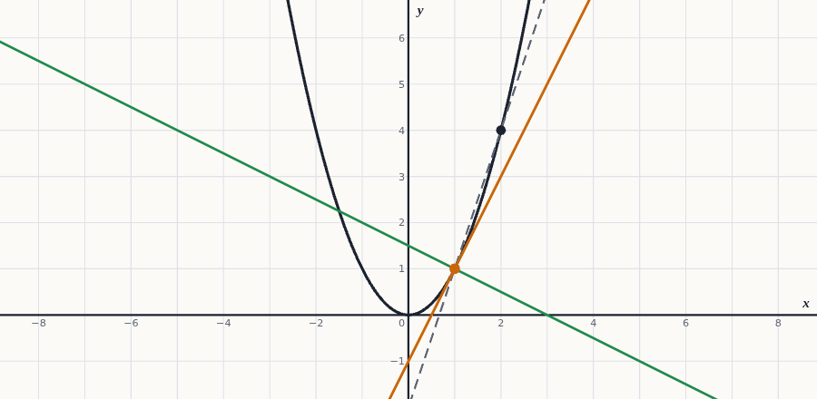

Qué es la derivada (velocidad instantánea y pendiente de la tangente), cuándo existe, por qué derivable implica continua y qué pasa cuando no existe (esquinas, tangentes verticales). Es la herramienta central del resto del curso.
Libro oficial: Cálculo para Ingenieros, §2.1 (pp. 73-78) + derivadas laterales (§2.2, p. 81)Ejercicios: E Ej. 2.1, 2.2, 2.6-2.9, 2.14, 2.17-2.23 (pp. 52-66)⏱ ~6 h de estudio
U oficial
S Stewart
L Larson
E ejercicios
P propio
— pasa el ratón (o toca) por cada etiqueta para ver libro y página; en pantallas anchas aparecen en el margen derecho.
La idea del tema en una frase
La derivada de $f$ en un punto $a$ mide cómo de deprisa cambia $f$ justo en $a$: es la velocidad instantánea si $f$ es una posición, y la pendiente de la recta tangente a la gráfica. Si una función es derivable en un punto, su gráfica «se ve como una recta» al ampliarla mucho alrededor de ese punto; si lo es en todo un intervalo, la gráfica no tiene aristas: es suave.
Si solo tienes un rato, llévate esto. El resto de la página lo desarrolla con ejemplos y ejercicios.
Método en 4 pasos: «¿es derivable en $a$?»
Mira la fórmula en $a$. Si hay una sola fórmula derivable alrededor de $a$, deriva con las reglas (tabla, U p.79) y has terminado. Si hay un empalme de trozos, un $|\cdot|$ o un valor suelto $f(a)$, sigue.
Comprueba la continuidad en $a$: $\lim_{x\to a}f(x)=f(a)$. Si no se cumple, no es derivable (Teorema 2.1) y no hace falta nada más.
Calcula las dos derivadas laterales con la definición, cada una con la fórmula de su lado: $f'(a^\pm)=\lim_{h\to0^\pm}\frac{f(a+h)-f(a)}{h}$.
Responde con una frase: derivable $\iff$ las dos existen, son finitas y coinciden. Con parámetros: continuidad primero y después «laterales iguales».
Qué hago según el tipo
¿Tangente, normal o puntos con pendiente dada? $\to$ $y=f(a)+f'(a)(x-a)$; para una pendiente $m$ (o $m=\tan\theta$) resuelve $f'(x)=m$ y sustituye en $f$, no en $f'$.
¿Función a trozos con parámetros? $\to$ continuidad en el empalme y después $f'(a^-)=f'(a^+)$: dos ecuaciones, dos incógnitas.
¿$|g|$ en un punto donde $g$ se anula? $\to$ cociente $\frac{|g(h)|}{h}$: si $g'(a)=0$ es derivable (emparedado); si $g'(a)\neq0$ hay esquina.
¿Factor oscilante como $\operatorname{sen}\frac1x$? $\to$ definición: (acotado)$\cdot$(algo que tiende a $0$) da $0$; $\operatorname{sen}\frac1h$ solo no tiene límite.
¿«Verdadero o falso» sobre continua y derivable? $\to$ derivable $\Rightarrow$ continua (no al revés); contraejemplo $|x|$.
Fórmulas y enunciados, con su «cuándo se usa»
Fórmula o enunciado
Cuándo se usa
$f'(a)=\lim_{h\to0}\frac{f(a+h)-f(a)}{h}$, finito (Def. 2.1, U p.75)
Derivar por definición; puntos donde las reglas no valen (empalmes, $|\cdot|$).
Tangente $y=f(a)+f'(a)(x-a)$ (U p.87); normal $x-a=-f'(a)(y-f(a))$
Cualquier pregunta de rectas; tangente horizontal $\iff f'(a)=0$.
Derivable $\Rightarrow$ continua (Teorema 2.1, U p.76)
Descartar derivabilidad con un salto; V/F; parámetros (continuidad primero).
$f'(a^\pm)=\lim_{h\to0^\pm}\frac{f(a+h)-f(a)}{h}$; derivable $\iff$ finitas e iguales (Def. 2.3, U p.81)
Funciones a trozos, valor absoluto, esquinas.
$|f|$ derivable en $a\iff f(a)\neq0$ o $f'(a)=0$ (E 2.21-2.22)
Decidir al vuelo si un valor absoluto crea esquina.
$(c)'=0$, $(x^c)'=cx^{c-1}$, $(e^x)'=e^x$, $(\ln x)'=\frac1x$, $\operatorname{sen}'=\cos$, $\cos'=-\operatorname{sen}$ (U p.79)
Calcular $f'(x)$ sin la definición.
Qué cae
En los exámenes resueltos hay 16 preguntas de este tema (más de una de cada veinte): la mitad son tangentes con una condición o funciones a trozos con parámetros, y el resto, la derivabilidad de $|g|$ en un cero, una oscilación $x^n\operatorname{sen}\frac1x$ y una pregunta de teoría. En el libro de ejercicios son E 2.1, 2.2, 2.6-2.9, 2.14 y 2.17-2.23. Tabla por tipo: pestaña Examen.
U pp.74-87P
Camino de estudio: elige tu nivel
Empieza por «Mínimo»; luego «Completo» y, para nota alta, «Reto». Marca cada ejercicio al terminarlo.
La definición (2), tangente y normal (3), derivable implica continua (4) y las laterales (5), con el mapa de decisión.
Un ejercicio de cada tipo:
E 2.7 (tangente horizontal), E 2.19 ($|x|$ y laterales), E 2.23 (parámetros), Examen 1 (tangente), Examen 3 ($|x^2\operatorname{sen}x|$), Examen 4 (continuidad y pendiente), Examen 5 (parámetros) y Examen 6 ($x\operatorname{sen}\frac1x$).
Límites de funciones y su álgebra (suma, producto, cociente), límites laterales y el teorema «el límite existe $\iff$ existen los dos laterales y coinciden» (U §1.4, pp. 43-47).
Continuidad en un punto (U Def. 1.20, p. 51): $f$ es continua en $a$ si $\lim_{x\to a}f(x)=f(a)$. Conservación del signo (U Prop. 1.9, p. 44), regla del emparedado (U p. 45) y el teorema de Bolzano (U p. 52).
Valor absoluto y su desigualdad $\big||u|-|v|\big|\le|u-v|$ (U Teorema 1.1, p. 16).
Ecuación de una recta: la de pendiente $m$ que pasa por $(x_0,y_0)$ es $y-y_0=m(x-x_0)$.
Derivadas de las funciones elementales (tabla en el apartado 6): U da por hecho que ya sabes derivar; la única forma de hacerlo con soltura es practicar.
Mapa del tema: qué se pide en los ejercicios y en el examen E pp.52-66
Los 14 ejercicios de E de este tema (los enunciados son de elegir opción o de razonar) piden cinco destrezas: (1) distinguir $f'(a)$ (número), $f'$ (función) y la tangente, y traducir «velocidad media/instantánea»; (2) usar que la pendiente de la tangente es $f'(a)$ para hallar puntos con una tangente dada (horizontal, con un ángulo, perpendicular a un vector); (3) calcular derivadas laterales y decidir la derivabilidad en un punto conflictivo (valor absoluto, funciones a trozos con parámetros); (4) usar «derivable $\Rightarrow$ continua» y su versión con Bolzano; (5) demostrar propiedades sobre $|f|$.
1Velocidad media y velocidad instantánea U pp.74-75
Lo que vas a aprender. qué es la velocidad media, qué es la velocidad instantánea y por qué la segunda es un límite.
Idea intuitiva
En un viaje en coche, el cuentakilómetros te dice lo recorrido y el reloj el tiempo; dividiendo obtienes la velocidad media del trayecto. Pero el velocímetro marca otra cosa: la velocidad en este instante. ¿Cómo se define «velocidad en un instante» si en un instante no se recorre distancia alguna? Se calcula la velocidad media en intervalos de tiempo cada vez más cortos alrededor del instante y se mira a qué valor se acercan: ese valor límite es la velocidad instantánea. Ese «se acercan» es exactamente un límite (el del tema 1.4).
U pp.74-75S p.145
Velocidad media e instantánea
Si $f(x)$ es la posición en el instante $x$ de un móvil (una hormiga en la recta real), la velocidad media entre los instantes $x=a$ y $x=b$ es
$$\frac{f(b)-f(a)}{b-a}.$$
La velocidad instantánea en $x=c$ se define como el límite de las velocidades medias:
$$\lim_{x\to c}\frac{f(x)-f(c)}{x-c}.$$
Ese límite es, por definición, la derivada de $f$ en $c$.
U pp.74-75
2La derivada en un punto U pp.75-76
Lo que vas a aprender. la definición de derivada en un punto, cómo calcularla paso a paso y qué significa que el límite sea finito.
Definición 2.1 (derivada en un punto)
Sea $f$ una función y $a$ un punto de su dominio (en la práctica, un punto con otros puntos del dominio pegados a él, como cualquier punto de un intervalo).
Se dice que $f$ es derivable en $a$ si el límite
$$\lim_{h\to0}\frac{f(a+h)-f(a)}{h}$$
existe y es un número real (no $\pm\infty$). Ese número se llama derivada de $f$ en $a$ y se escribe $f'(a)$ (o $\dfrac{df}{dx}(a)$).
En palabras: $\dfrac{f(a+h)-f(a)}{h}$ es la pendiente de la recta que une los puntos $(a,f(a))$ y $(a+h,f(a+h))$ de la gráfica. La derivada es el valor al que se acerca esa pendiente cuando el segundo punto se acerca al primero.
Forma equivalente: llamando $x=a+h$ (así $x\to a$ equivale a $h\to0$ y $x-a=h$), $\displaystyle f'(a)=\lim_{x\to a}\frac{f(x)-f(a)}{x-a}$. Usa la de $h$ para desarrollar $f(a+h)$ y la de $x$ cuando se pueda factorizar $x-a$.
U p.75L pp.99, 101
Dos puntos finos de la definición
«Finito». Un límite $+\infty$ o $-\infty$ no da derivada. La función $\sqrt x$ en $0$ tiene cociente $\frac{\sqrt h}{h}=\frac1{\sqrt h}\to+\infty$: no es derivable en $0$ (tiene tangente vertical, apartado 5).
El cociente no está definido en $h=0$ (sería $0/0$). No importa: un límite solo mira los $h\neq0$. Cada cociente con $h\neq0$ es una pendiente perfectamente normal (apartado 3); lo que hace falta es ver a qué número tiende.
U p.75
Ejemplo 2.1 de U: la derivada de una constante
Si $f(x)=k$ con $k\in\mathbb R$, para todo $a$: $f'(a)=\lim_{h\to0}\dfrac{k-k}{h}=\lim_{h\to0}0=0$. Una función constante es derivable en todo punto y su derivada es $0$ (su gráfica es horizontal: no cambia).
U p.76
Ejemplo 2.2 de U: la derivada de $x^2$
Formamos el cociente con la primera forma: $\dfrac{x^2-a^2}{x-a}$. En $x=a$ da $0/0$, así que hay que simplificar antes de tomar el límite.
Factorizamos: $x^2-a^2=(x-a)(x+a)$. Para $x\neq a$ se cancela $x-a$: $\dfrac{x^2-a^2}{x-a}=x+a$.
Límite: $\lim_{x\to a}(x+a)=2a$. Luego $f'(a)=2a$ para todo $a\in\mathbb R$.
U p.76
Receta: derivar por definición
Escribe el cociente $\dfrac{f(a+h)-f(a)}{h}$ (o $\dfrac{f(x)-f(a)}{x-a}$).
Sustituye $f$ y simplifica hasta que $h$ (o $x-a$) desaparezca del denominador: desarrollar un cuadrado, factorizar, multiplicar por el conjugado si hay raíces...
Toma el límite. Si es un número real, ese es $f'(a)$; si es $\pm\infty$ o no existe, $f$ no es derivable en $a$.
PL pp.99-100
Error típico
Llamar «la derivada» a tres cosas distintas: el número $f'(a)$ (la pendiente en un punto), la función $f'$ (que a cada $x$ le da su pendiente, apartado 6) y la recta tangente (apartado 3). Además, pensar que para hallar $f'(a)$ se puede primero sustituir $x=a$ en $f$ y luego derivar. $f(a)$ es una constante y su derivada es $0$; $f'(a)$ es la derivada de $f$ y después se evalúa en $a$.
E p.52
3Interpretación geométrica: tangente y normal U pp.75, 87
Lo que vas a aprender. que la derivada es la pendiente de la tangente, a escribir la tangente y la normal y a pasar de un ángulo a una pendiente.
Idea intuitiva: de la secante a la tangente
Toma dos puntos de la gráfica, $P=(a,f(a))$ y $Q=(a+h,f(a+h))$, y traza la recta que los une: la secante. Su pendiente es justo el cociente de la definición. Ahora acerca $Q$ a $P$ (haz $h$ más pequeño): la secante gira y se va «pegando» a la curva en $P$. La recta a la que tiende es la tangente, y su pendiente es el límite de las pendientes de las secantes, es decir, $f'(a)$. Es la misma idea que arriba: la velocidad media era la pendiente de una secante en la gráfica posición-tiempo.
U p.75L p.97S p.143

Interactivo propio. Mueve h hacia 0 (por ambos lados): la secante (gris, discontinua) se pega a la tangente (naranja) y su pendiente se acerca a $f'(a)$. La normal (verde, se define más abajo) es perpendicular a la tangente; en un punto con $f'(a)=0$ queda vertical. P
Recta tangente (definición) y su ecuación
Si $f$ es derivable en $a$, la recta tangente a la gráfica de $f$ en $(a,f(a))$ es la recta que pasa por ese punto y tiene pendiente $f'(a)$. Como la recta por $(x_0,y_0)$ con pendiente $m$ es $y-y_0=m(x-x_0)$, la tangente es
$$y=f(a)+f'(a)\,(x-a).$$
Un punto de la gráfica donde la pendiente vale $0$ (tangente horizontal) es aquel con $f'(a)=0$.
U pp.75, 87S pp.144, 147 · L pp.97, 100
Recta normal
La recta normal a una curva en un punto $P$ es la recta que pasa por $P$ y es perpendicular a la tangente en $P$. Si $f'(a)\neq0$, su pendiente es $-\dfrac1{f'(a)}$ (el opuesto del inverso). Una forma que vale siempre, incluso cuando $f'(a)=0$, es
$$x-a=-f'(a)\,\big(y-f(a)\big),$$
que es la recta por $(a,f(a))$ con vector director $\big(-f'(a),\,1\big)$ (la tangente tiene vector director $(1,\,f'(a))$ y el producto escalar es $-f'(a)+f'(a)=0$). Si $f'(a)=0$, la tangente es horizontal y la normal es la vertical $x=a$; la fórmula con $-1/f'(a)$ no serviría ahí.
S pp.176-177E pp.54-55
Del ángulo a la pendiente
Si una recta forma con el eje $x$ un ángulo $\theta$ (medido desde el eje hacia la recta, en sentido contrario a las agujas del reloj), su pendiente es $m=\tan\theta$. Así, $\theta=\frac\pi4$ da $m=1$; $\theta=0$ da $m=0$ (horizontal).
E p.55
Ejemplo: tangente y normal a $y=x^2$ en $(1,1)$
Por el Ejemplo 2.2, $f'(a)=2a$; en $a=1$, $f'(1)=2$. Pendiente de la tangente: $2$.
Tangente: $y-1=2(x-1)$, es decir, $y=2x-1$.
Normal: pendiente $-\tfrac12$; $y-1=-\tfrac12(x-1)$, es decir, $y=-\tfrac12x+\tfrac32$. (Con la forma general: $x-1=-2(y-1)$.)
S p.144
Error típico
(i) Escribir la tangente como $y=f'(a)(x-a)$ y olvidar el $+f(a)$: esa recta pasa por $(a,0)$, no por el punto de la gráfica. (ii) Tomar la pendiente de la normal como $-f'(a)$ o como $1/f'(a)$ en lugar de $-1/f'(a)$. (iii) Confundir el ángulo con la pendiente: igualar $f'(x)=\pi/4$ en vez de $f'(x)=\tan\frac\pi4$.
4Derivable implica continua U pp.76-77
Lo que vas a aprender. por qué derivable implica continua, para qué sirve su contrarrecíproco y por qué el recíproco es falso.
Idea intuitiva
Continua significa «sin saltos»: se puede dibujar sin levantar el lápiz. Derivable pide algo más fuerte: sin saltos y sin aristas ni tangentes verticales. Si hubiera un salto en $a$, no habría una tangente única (a un lado y a otro la curva estaría a alturas distintas), así que derivable $\Rightarrow$ continua. En cambio una esquina es continua pero no derivable. La continuidad es la condición precisa $\lim_{x\to a}f(x)=f(a)$.
U p.76
Teorema 2.1
Si $f$ es derivable en $a$, entonces $f$ es continua en $a$.
Demostración. Para $h\neq0$ con $a+h\in D$, multiplicamos y dividimos por $h$:
$$f(a+h)-f(a)=h\cdot\frac{f(a+h)-f(a)}{h}.$$
Al hacer $h\to0$, el primer factor tiende a $0$ y el segundo a $f'(a)$ (que es un número real, porque $f$ es derivable). Por el límite de un producto (U Prop. 1.11, p. 46) el producto tiende a $0\cdot f'(a)=0$. Por tanto $\lim_{h\to0}f(a+h)=f(a)$, que es la definición de continuidad en $a$ (U Def. 1.20, p. 51). $\blacksquare$
U p.76S pp.158-159L p.102
Cómo se usa: dos lecturas del teorema
Contrarrecíproco: si $f$ no es continua en $a$, entonces no es derivable en $a$. No hace falta estudiar el límite de la derivada.
Ser continua no basta para ser derivable (el recíproco es falso): ver $|x|$ en el apartado 5 y el Ejemplo 2.5 de U.
U p.76L p.102
Ejemplos 2.3, 2.4 y 2.5 de U
Ej. 2.3 (Heaviside). $f(x)=1$ si $x>0$, $f(x)=0$ si $x\le0$, es discontinua en $0$ (salto). Por el Teorema 2.1 no es derivable en $0$, sin calcular ningún límite.
Ej. 2.4. $f(x)=x^2\operatorname{sen}^2\frac3x$ si $x\neq0$, $f(0)=0$. En $a=0$: $\dfrac{f(h)-f(0)}{h}=h\operatorname{sen}^2\frac3h\to0$, porque $\left|h\operatorname{sen}^2\frac3h\right|\le|h|\to0$ (el seno está acotado; U Prop. 1.10, p. 45). Luego sí es derivable en $0$ con $f'(0)=0$.
Ej. 2.5. $f(x)=x\cos\frac{10}x$ si $x\neq0$, $f(0)=0$ es continua en $\mathbb R$ (en $0$: $\left|x\cos\frac{10}x\right|\le|x|\to0=f(0)$, por el emparedado, U p. 45), pero $\dfrac{f(h)-f(0)}{h}=\cos\frac{10}h$ oscila entre $-1$ y $1$ cada vez más rápido al acercarse $h$ a $0$: no existe el límite, luego no es derivable en $0$. Continua sin ser derivable.
Diferencia entre los dos últimos: la gráfica del Ej. 2.4 queda entre $0$ y $x^2$ (dos curvas que se tocan en $0$ y comparten tangente horizontal); la del Ej. 2.5 queda entre $-x$ y $x$ (rectas de pendientes distintas: no hay tangente común).
U pp.76-78
Ejemplo 2.4: la gráfica queda entre $0$ y $x^2$, que comparten tangente horizontal en $0$: es derivable con $f'(0)=0$. Pasa el ratón por la gráfica (o toca; o usa ← →) para leer las coordenadas. PEjemplo 2.5: la gráfica oscila entre $-|x|$ y $|x|$, rectas de pendientes distintas: es continua en $0$ pero no tiene tangente (no derivable). Pasa el ratón por la gráfica (o toca; o usa ← →) para leer las coordenadas. P
5Derivadas laterales y cuándo falla la derivada U p.81 (§2.2)
Lo que vas a aprender. a calcular derivadas laterales, a decidir si una función es derivable en un punto de empalme y las cuatro formas en que falla la derivada.
Idea intuitiva
Al calcular $\lim_{h\to0}$ te acercas a $a$ por dos lados: $h>0$ (por la derecha) y $h<0$ (por la izquierda). Si cada lado da su propia pendiente, y esas pendientes son distintas, la gráfica llega al punto con dos «direcciones» distintas: una esquina, sin una única tangente. Las derivadas laterales miden cada una de esas dos pendientes por separado.
U p.81L p.101
Definición 2.3 (derivadas laterales)
$f$ es derivable por la derecha en $a$ si existe y es finito
$$f'(a^+)=\lim_{h\to0^+}\frac{f(a+h)-f(a)}{h},$$
y derivable por la izquierda si existe y es finito $f'(a^-)=\lim_{h\to0^-}\frac{f(a+h)-f(a)}{h}$. Son las derivadas laterales ($a^+$: valores mayores que $a$; $a^-$: menores).
Criterio. Si las derivadas laterales en $a$ existen y coinciden, entonces $f$ es derivable en $a$ y $f'(a)$ vale ese valor común. Recíprocamente, si $f$ es derivable en $a$ y $a$ es un punto interior de $D$ (hay puntos de $D$ a ambos lados de $a$ arbitrariamente cerca), existen ambas y son iguales: el límite bilateral existe si y solo si existen los laterales y coinciden (U Teorema 1.4, p. 47). Si $a$ es un extremo de $D$ solo hay un lado y el recíproco falla: $f(x)=x$ en $[0,\infty)$ es derivable en $0$ con $f'(0)=1$, pero no existe $f'(0^-)$.
U p.81U p.47
Ejemplo: $f(x)=|x|$ en $0$ (continua, no derivable)
Cociente $\frac{|h|}{h}$: vale $1$ si $h>0$ y $-1$ si $h<0$. Las laterales existen pero son distintas, luego $|x|$ no es derivable en $0$, aunque sí continua. Cálculo completo en el ejercicio 2.19; la figura de abajo lo muestra.
S pp.157-158L p.102
Gráfica de $f(x)=|x|$. Por la derecha la recta tiene pendiente $+1$ y por la izquierda $-1$: las dos derivadas laterales existen pero no coinciden, y en el origen hay una arista.
Error típico
Creer que «existen las dos derivadas laterales» basta para ser derivable. Hace falta que además coincidan (ejercicio 2.18: $|x|$ es el contraejemplo). Tampoco tomes la derivada de la fórmula de un lado como derivada lateral sin comprobar que esa fórmula toma en $a$ el valor $f(a)$ (ejercicio 2.23).
Las formas en que una función deja de ser derivable en $a$ S p.159
1. Esquina o picoLas derivadas laterales existen y son distintas, o una de ellas es infinita. Ej.: $|x|$ en $0$.
2. DiscontinuidadSi $f$ no es continua en $a$, no es derivable (Teorema 2.1). Ej.: Heaviside.
3. Tangente vertical$f$ continua en $a$ y el cociente tiende a $+\infty$ o a $-\infty$. Ej.: $\sqrt x$ en $0$, $\sqrt[3]{x}$ en $0$.
4. OscilaciónEl cociente oscila sin tender a nada. Ej.: $x\cos\frac{10}x$ en $0$ (U Ej. 2.5).
Tangente vertical
Si $f$ es continua en $a$ y el cociente $\dfrac{f(a+h)-f(a)}{h}$ tiende a $+\infty$ o a $-\infty$ cuando $h\to0$, la recta vertical $x=a$ es tangente a la gráfica (definición de L, p. 98). La función no es derivable en $a$ (no hay derivada finita), pero geométricamente sí hay tangente (vertical). Ejemplos de L: $f(x)=\sqrt x$ en $(0,0)$ (cociente $\frac1{\sqrt h}\to+\infty$; solo hay lado derecho, porque el dominio es $[0,\infty)$) y $f(x)=x^{1/3}$ en $0$, donde $\frac{x^{1/3}-0}{x}=x^{-2/3}\to+\infty$ por ambos lados.
L pp.98-102S p.159
Para $f(x)=\sqrt x$ en $0$, la secante por $(0,0)$ y $(h,\sqrt h)$ tiene pendiente $m=\frac{\sqrt h}{h}=\frac1{\sqrt h}$: vale $1$, $2$ y $4$ para $h=1,\ \frac14,\ \frac1{16}$ y crece sin límite al reducir $h$. Las secantes tienden a la recta vertical $x=0$: hay tangente vertical, pero no derivada finita.
6La función derivada y las reglas que necesitas U pp.78-79
Lo que vas a aprender. qué es la función derivada y las reglas mínimas para calcular derivadas sin usar la definición.
Definición 2.2 (derivable en un conjunto; función derivada)
Una función es derivable en un conjunto $A\subset D$ si lo es en todos los puntos de $A$. Dada $f$, la función derivada (o derivada primera) es la función $f'$ que tiene por dominio el conjunto $A$ donde $f$ es derivable y que a cada $x\in A$ le asigna el número $f'(x)$:
$$f':A\to\mathbb R.$$
U p.78L p.99
Idea intuitiva
La derivada en un punto es un número (la pendiente ahí). Si haces esto en todos los puntos donde se pueda, obtienes una función: $f'(x)$ = «pendiente de la gráfica en $x$». El concepto de derivada es local (solo depende de cómo es $f$ cerca de $a$), pero las funciones derivables en todo su dominio tienen propiedades muy útiles (U §2.5: Rolle, valor medio, monotonía; tema 2.5). Por ejemplo, con $f(x)=x^2$ (Ej. 2.2 de U) resulta $f'(x)=2x$: en $x=1$ la pendiente es $2$, en $x=0$ es $0$ (fondo de la parábola).
U p.78
Reglas mínimas (para calcular sin usar la definición) U p.79
Proposición 2.1, regla de la cadena y tabla (resumen)
Regla de la cadena. Una función compuesta es «una función dentro de otra»: primero se aplica la interior $u=g(x)$ y al resultado se le aplica la exterior $y=f(u)$, de modo que $y=f(g(x))$. Por ejemplo, en $y=\operatorname{sen}(6x)$ la interior es $u=6x$ y la exterior es $y=\operatorname{sen}u$.
Idea: si $y$ cambia $\frac{dy}{du}$ veces más rápido que $u$, y $u$ cambia $\frac{du}{dx}$ veces más rápido que $x$, entonces $y$ cambia el producto de ambas veces más rápido que $x$. Como en dos engranajes: si el primer eje da 3 vueltas por cada una del segundo ($\frac{dy}{du}=3$) y el segundo da 2 por cada una del tercero ($\frac{du}{dx}=2$), el primero da $3\cdot2=6$ por cada una del tercero.
Si $u=g(x)$ es derivable en $x$ e $y=f(u)$ es derivable en $u=g(x)$, entonces $y=f(g(x))$ es derivable en $x$ y
En palabras: derivada de la exterior, evaluada en la interior, por la derivada de la interior. Es decir, $(f\circ g)'(a)=f'(g(a))\cdot g'(a)$.
Ejemplo: $y=\operatorname{sen}(6x)$. Exterior $f(u)=\operatorname{sen}u$, $f'(u)=\cos u$; interior $g(x)=6x$, $g'(x)=6$. Entonces $y'=\cos(6x)\cdot 6$. El error típico es olvidar el factor $g'(x)=6$.
$f(x)$
$f'(x)$
$f(x)$
$f'(x)$
$c$ (constante)
$0$
$x^c$
$c\,x^{c-1}$
$e^x$
$e^x$
$a^x$ $(a>0)$
$a^x\ln a$
$\ln x$
$1/x$
$\log_a x$
$\dfrac1x\log_a e$
$\operatorname{sen}x$
$\cos x$
$\cos x$
$-\operatorname{sen}x$
U p.79L pp.129-130
Estas reglas se estudian en el tema 2.2; aquí se usan en los ejercicios 2.7-2.9, 2.20 c) y 2.23 y en los ejemplos propios 2 y 3. Recuerda que una regla como esta vale en los puntos donde $f$ y $g$ son derivables: no las apliques en un punto donde la función tenga una esquina.
7Mapa de decisión: «¿es derivable en el punto?» U pp.75-81P
Lo que vas a aprender. a decidir, en cuanto lees la función, qué hacer en el punto conflictivo (mapa de decisión y, desplegable, cuadro con el detalle de cada caso).
Idea
«¿Es derivable aquí?» no se contesta con una fórmula, sino con un orden: primero lo barato (¿una sola fórmula? ¿hay salto?), luego las laterales y, solo si el cociente se resiste, la definición con $h$. Sigue el mapa y, si quieres el detalle de cada caso, abre el cuadro «Si ves… haz…».
U pp.76, 81S p.159
Léelo de arriba abajo: en cada pregunta, «no» baja a la siguiente y «sí» te lleva a la acción de la derecha. El orden importa: la continuidad se mira antes que las laterales, porque un salto lo decide todo sin cuentas.
Ver el cuadro «Si ves… haz…» con los ejercicios de cada caso
Lo que ves
Qué hacer
Cuidado
Dónde
«Calcula $f'(a)$ con la definición» o un cociente $\frac{f(a+h)-f(a)}{h}$ concreto
Simplifica hasta que $h$ desaparezca del denominador (desarrollar, factorizar, conjugado) y toma el límite
El límite debe ser finito; $f'(a)$ es un número, no una función
Lo que vas a aprender. a resolver tú solo un ejemplo de cada tipo. Intenta cada uno antes de abrir la pista; empieza por los ★ (los ★★ son ampliación).
Ahora hazlo tú
Antes de calcular, pregúntate qué objeto te piden: un número ($f'(a)$), una recta (tangente o normal) o un sí/no (¿derivable?). En un punto de empalme, primero continuidad y después laterales.
Derivada por la definición
★ Básico Práctica a1 · derivada de un polinomio por la definición P
Calcula $f'(2)$ para $f(x)=x^2-3x$ usando solo la definición de derivada.
Pista
Escribe $\frac{f(2+h)-f(2)}{h}$, desarrolla el numerador y saca factor común $h$ antes de hacer $h\to0$.
Ver solución
Definición (U Def. 2.1, p.75): $f'(2)=\lim_{h\to0}\dfrac{f(2+h)-f(2)}{h}$.
Valores: $f(2)=4-6=-2$ y $f(2+h)=(2+h)^2-3(2+h)=4+4h+h^2-6-3h=h^2+h-2$.
Numerador: $f(2+h)-f(2)=h^2+h$. Al sustituir $h=0$ el cociente sería $\frac00$, así que se simplifica primero: $\dfrac{h^2+h}{h}=h+1$ (para $h\neq0$, que es lo único que importa en el límite).
Límite: $\lim_{h\to0}(h+1)=1$, que es finito: $f$ es derivable en $2$.
Resultado: $f'(2)=1$
★★ Medio Práctica a2 · $1/\sqrt x$ por la definición P
Calcula $f'(1)$ para $f(x)=\dfrac1{\sqrt x}$ ($x>0$) usando la definición de derivada.
Pista
Pon las dos fracciones con denominador común $\sqrt{1+h}$ y después multiplica arriba y abajo por el conjugado $1+\sqrt{1+h}$.
Ver solución
Definición (U Def. 2.1, p.75), con $f(1)=1$: $f'(1)=\lim_{h\to0}\dfrac{\frac1{\sqrt{1+h}}-1}{h}$. Al sustituir sale $\frac00$.
Denominador común: $\dfrac1{\sqrt{1+h}}-1=\dfrac{1-\sqrt{1+h}}{\sqrt{1+h}}$, luego el cociente es $\dfrac{1-\sqrt{1+h}}{h\sqrt{1+h}}$.
Conjugado: $(1-\sqrt{1+h})(1+\sqrt{1+h})=1-(1+h)=-h$. Multiplicando arriba y abajo por $1+\sqrt{1+h}$:
$$\frac{-h}{h\sqrt{1+h}\,(1+\sqrt{1+h})}=\frac{-1}{\sqrt{1+h}\,(1+\sqrt{1+h})}.$$
Límite: la raíz es continua, $\sqrt{1+h}\to1$, y el denominador tiende a $1\cdot2=2\neq0$: el límite es $-\frac12$ (álgebra de límites, U §1.4).
Comprobación: con la tabla de derivadas (U p.79), $(x^{-1/2})'=-\frac12x^{-3/2}$, que en $x=1$ vale $-\frac12$.
Resultado: $f'(1)=-\frac12$
La derivada como velocidad (media e instantánea)
★ Básico Práctica b1 · velocidad media e instantánea P
Un móvil se encuentra en el instante $t$ (en segundos) en la posición $s(t)=t^2+2t$ (en metros). Calcula su velocidad media entre $t=1$ y $t=3$, y su velocidad instantánea en $t=1$.
Pista
Media: incremento de posición entre incremento de tiempo. Instantánea: el límite de esas medias cuando el intervalo se encoge, es decir, $s'(1)$.
Ver solución
Velocidad media (U p.74): $s(1)=3$, $s(3)=15$, así que $v_m=\dfrac{s(3)-s(1)}{3-1}=\dfrac{12}{2}=6$ m/s.
Velocidad instantánea = límite de las velocidades medias en $[1,1+h]$ (U p.75, Def. 2.1): $s(1+h)-s(1)=(1+h)^2+2(1+h)-3=h^2+4h$.
Simplificar y pasar al límite: $\dfrac{h^2+4h}{h}=h+4\to4$ cuando $h\to0$.
Interpretación: en $t=1$ va a $4$ m/s; la media en $[1,3]$ es mayor porque el móvil acelera.
Resultado: $v_m=6$ m/s y $s'(1)=4$ m/s
★★ Medio Práctica b2 · ¿cuándo se parece la media a la instantánea? P
Una piedra cae y ha recorrido $s(t)=5t^2$ metros a los $t$ segundos. (a) Calcula la velocidad media en $[2,2+h]$ con $h>0$ y, a partir de ella, la velocidad instantánea en $t=2$. (b) ¿Para qué valores de $h>0$ la velocidad media se diferencia de la instantánea en menos de $0{,}1$ m/s?
Pista
Simplifica el cociente incremental hasta que quede una expresión sencilla en $h$; el apartado (b) es una desigualdad con esa expresión.
Ver solución
Media en $[2,2+h]$ (U p.74): $s(2+h)-s(2)=5(4+4h+h^2)-20=20h+5h^2$, así que $v_m(h)=\dfrac{20h+5h^2}{h}=20+5h$.
Instantánea (U Def. 2.1, p.75): $s'(2)=\lim_{h\to0}(20+5h)=20$ m/s.
Diferencia: $v_m(h)-s'(2)=5h$. Se pide $5h<0{,}1$, es decir, $h<0{,}02$ s.
Idea: la derivada es justamente el valor al que se acercan las medias; aquí se ve cuánto hay que acortar el intervalo para que la media la aproxime con un error dado.
Resultado: $v_m=20+5h$, $s'(2)=20$ m/s; error menor que $0{,}1$ si $0<h<0{,}02$
Recta tangente y recta normal
★ Básico Práctica c1 · tangente y normal a una cúbica P
Halla las rectas tangente y normal a la gráfica de $f(x)=x^3-2x$ en el punto de abscisa $x=1$.
Pista
Necesitas el punto $(1,f(1))$ y la pendiente $f'(1)$. La normal es perpendicular a la tangente: su pendiente es $-\frac1{f'(1)}$.
Ver solución
Punto: $f(1)=1-2=-1$, es decir, $(1,-1)$.
Pendiente: $f'(x)=3x^2-2$ (tabla y linealidad, U p.79), luego $f'(1)=1$. La pendiente de la tangente es $f'(1)$ (U p.75).
Tangente (U p.87): $y=f(1)+f'(1)(x-1)=-1+(x-1)=x-2$.
Normal: pasa por $(1,-1)$ con pendiente $-\frac1{1}=-1$: $y=-1-(x-1)=-x$. Comprobación: vectores directores $(1,1)$ y $(1,-1)$, producto escalar $1-1=0$.
Resultado: tangente $y=x-2$; normal $y=-x$
★★ Medio Práctica c2 · tangentes desde un punto exterior P
Halla las rectas tangentes a la parábola $y=x^2$ que pasan por el punto $(1,-3)$ (que no está en la parábola).
Pista
No conoces el punto de tangencia: llámalo $(a,a^2)$, escribe la tangente en él y obliga a que pase por $(1,-3)$. Sale una ecuación en $a$.
Ver solución
Tangente en un punto genérico $(a,a^2)$: como $f'(a)=2a$ (U p.79), la tangente es $y=a^2+2a(x-a)=2ax-a^2$ (U p.87).
Imponer que pase por $(1,-3)$: $-3=2a\cdot1-a^2\iff a^2-2a-3=0\iff(a-3)(a+1)=0$, luego $a=3$ o $a=-1$.
Rectas: con $a=3$: $y=6x-9$; con $a=-1$: $y=-2x-1$.
Comprobación: $6\cdot1-9=-3$ y $-2\cdot1-1=-3$. Error típico: usar $(1,-3)$ como punto de tangencia y escribir $y=-3+2(x-1)$, que ni siquiera toca la parábola en ese punto.
Resultado: $y=6x-9$ (tangente en $(3,9)$) e $y=-2x-1$ (tangente en $(-1,1)$)
Tangente con una condición (pendiente dada, tangencia)
★ Básico Práctica d1 · tangente paralela a una recta dada P
Halla los puntos de la gráfica de $f(x)=x^3-3x+1$ en los que la tangente es paralela a la recta $y=9x+2$.
Pista
Rectas paralelas tienen la misma pendiente: resuelve $f'(x)=9$ y sustituye las soluciones en $f$ (no en $f'$).
Ver solución
Traducir: paralela a $y=9x+2$ significa pendiente $9$; la pendiente en $(x,f(x))$ es $f'(x)$ (U p.75).
Derivar (U p.79): $f'(x)=3x^2-3$.
Resolver: $3x^2-3=9\iff x^2=4\iff x=\pm2$.
Ordenadas (en $f$): $f(2)=8-6+1=3$ y $f(-2)=-8+6+1=-1$.
Resultado: $(2,3)$ y $(-2,-1)$
★★ Medio Práctica d2 · ¿para qué $c$ es tangente la recta $y=x$? P
Halla $c\in\mathbb R$ para que la recta $y=x$ sea tangente a la gráfica de $f(x)=c+\ln x$, y di en qué punto.
Pista
Ser tangente en $x_0$ son dos condiciones: misma pendiente ($f'(x_0)=1$) y mismo punto ($f(x_0)=x_0$).
Ver solución
Dos condiciones: la recta $y=x$ es tangente en $x_0$ si pasa por $(x_0,f(x_0))$ y tiene pendiente $f'(x_0)$ (U p.75 y p.87): $f'(x_0)=1$ y $f(x_0)=x_0$.
Pendiente: $f'(x)=\frac1x$ (U p.79), y $\frac1{x_0}=1$ da $x_0=1$.
Punto: $f(1)=c+\ln1=c$ debe valer $1$: $c=1$.
Comprobación: la tangente a $1+\ln x$ en $x=1$ es $y=1+1\cdot(x-1)=x$. Error típico: imponer solo la pendiente; con $c\neq1$ la recta $y=x$ es paralela a la tangente en $x=1$, pero no la toca allí.
Resultado: $c=1$, tangente en el punto $(1,1)$
Derivadas laterales en un punto de empalme
★ Básico Práctica e1 · empalme suave P
Estudia si es derivable en $x=1$ la función $f(x)=\begin{cases}x^2,&x\le1,\\ 2x-1,&x>1.\end{cases}$
Pista
Comprueba primero que no hay salto en $x=1$; después calcula $f'(1^-)$ y $f'(1^+)$ con la definición, usando en cada lado su fórmula.
Ver solución
Continuidad: $f(1)=1$, $\lim_{x\to1^-}x^2=1$ y $\lim_{x\to1^+}(2x-1)=1$: es continua en $1$ (U Def. 1.20, p.51).
Izquierda (U Def. 2.3, p.81): $f'(1^-)=\lim_{h\to0^-}\dfrac{(1+h)^2-1}{h}=\lim_{h\to0^-}(2+h)=2$.
Conclusión: las laterales existen y coinciden, luego $f$ es derivable en $1$ con $f'(1)=2$ (U p.81). La recta $y=2x-1$ es justo la tangente a $y=x^2$ en $(1,1)$.
Resultado: derivable en $1$, con $f'(1^-)=f'(1^+)=f'(1)=2$
★★ Medio Práctica e2 · empalme con una exponencial P
Estudia la derivabilidad en $x=0$ de $f(x)=\begin{cases}0,&x\le0,\\ x\,e^{-1/x},&x>0.\end{cases}$
Pista
Por la derecha el cociente incremental se simplifica a $e^{-1/h}$. ¿Hacia dónde va el exponente $-\frac1h$ cuando $h\to0^+$?
Ver solución
Valor: $f(0)=0$.
Izquierda (U Def. 2.3, p.81): para $h<0$, $f(h)=0$, el cociente es $\frac{0-0}{h}=0$ y $f'(0^-)=0$.
Derecha: para $h>0$, $\dfrac{f(h)-f(0)}{h}=\dfrac{h\,e^{-1/h}}{h}=e^{-1/h}$. Cuando $h\to0^+$, $-\frac1h\to-\infty$, y $e^{t}\to0$ cuando $t\to-\infty$; así que $f'(0^+)=0$.
Conclusión: laterales iguales: $f$ es derivable en $0$ con $f'(0)=0$ (U p.81), y en particular continua (U Teorema 2.1, p.76).
Resultado: derivable en $0$, con $f'(0)=0$
Continuidad frente a derivabilidad
★ Básico Práctica f1 · un salto impide derivar P
Sea $f(x)=\begin{cases}x+1,&x<0,\\ x^2,&x\ge0.\end{cases}$ ¿Es derivable en $x=0$? Un compañero responde: «no, porque $(x+1)'=1$ y $(x^2)'=0$ no coinciden en $0$». ¿Es correcta la respuesta? ¿Y el razonamiento?
Pista
Antes de comparar pendientes, mira si los dos trozos llegan a la misma altura en $0$. Si no, el Teorema 2.1 ya responde.
Ver solución
Continuidad: $f(0)=0$, pero $\lim_{x\to0^-}(x+1)=1\neq0$: $f$ no es continua en $0$ (U Def. 1.20, p.51).
Teorema 2.1 (U p.76): derivable $\Rightarrow$ continua. Por el contrarrecíproco, como no es continua, no es derivable en $0$.
Con la definición: $f'(0^-)=\lim_{h\to0^-}\dfrac{(h+1)-0}{h}=-\infty$ (numerador $\to1$, denominador $\to0^-$): no es finita. Por la derecha $\frac{h^2}{h}=h\to0$.
El compañero acierta la respuesta, pero el razonamiento no es válido: la derivada de la fórmula de la izquierda ($1$) no es $f'(0^-)$, porque $x+1$ no vale $f(0)$ en $0$. Si los trozos no empalman, derivar las fórmulas no sirve.
Resultado: no es derivable en $0$ (no es continua; $f'(0^-)=-\infty$, $f'(0^+)=0$)
★★ Medio Práctica f2 · $|x|^p$: continua siempre, derivable a veces P
Sea $p>0$ y $f(x)=|x|^p$. (a) Comprueba que $f$ es continua en $0$ para todo $p>0$. (b) ¿Para qué valores de $p$ es derivable en $0$?
Pista
El cociente incremental es $\frac{|h|^p}{h}$. Para $h>0$ vale $h^{p-1}$; para $h<0$, $-|h|^{p-1}$. Distingue $p<1$, $p=1$ y $p>1$.
Ver solución
(a) $|x|^p\to0=f(0)$ cuando $x\to0$, porque $p>0$: continua en $0$ (U Def. 1.20, p.51).
Cociente (U Def. 2.3, p.81): $\dfrac{|h|^p-0}{h}$ vale $h^{p-1}$ si $h>0$ y $-|h|^{p-1}$ si $h<0$.
$p>1$: el exponente $p-1>0$, así que $|h|^{p-1}\to0$: $f'(0^+)=f'(0^-)=0$ y $f$ es derivable con $f'(0)=0$.
$p=1$: es $|x|$: laterales $1$ y $-1$, distintas (esquina). No derivable.
$0<p<1$: $p-1<0$, así que $h^{p-1}=\frac1{h^{1-p}}\to+\infty$ por la derecha y el lado izquierdo $\to-\infty$: las laterales no son finitas (pico). No derivable. Ejemplo: $p=\frac12$ da $\sqrt{|x|}$.
Moraleja: en los tres casos $f$ es continua, pero solo es derivable si $p>1$. Continua no implica derivable; el recíproco del Teorema 2.1 (U p.76) es falso.
Resultado: continua para todo $p>0$; derivable en $0$ si y solo si $p>1$ (y entonces $f'(0)=0$)
Parámetros para que una función a trozos sea derivable
★ Básico Práctica g1 · recta y cúbica P
Halla $a$ y $b$ para que $f(x)=\begin{cases}ax+b,&x<1,\\ x^3,&x\ge1\end{cases}$ sea derivable en todo $\mathbb R$.
Pista
Solo importa $x=1$. Dos condiciones: misma altura (continuidad) y misma pendiente (laterales iguales).
Ver solución
Fuera de $1$ cada trozo es un polinomio, derivable (U p.79). Solo se estudia $x=1$.
Continuidad (necesaria por el Teorema 2.1, U p.76): $f(1)=1$ y $\lim_{x\to1^-}(ax+b)=a+b$, luego $a+b=1$.
Laterales (U Def. 2.3, p.81), ya con $a+b=1$: $f'(1^-)=\lim_{h\to0^-}\dfrac{a(1+h)+b-1}{h}=\lim_{h\to0^-}\dfrac{ah}{h}=a$; $f'(1^+)=\lim_{h\to0^+}\dfrac{(1+h)^3-1}{h}=\lim_{h\to0^+}(3+3h+h^2)=3$.
Igualar: $a=3$ y entonces $b=1-a=-2$. La recta $y=3x-2$ es la tangente a $y=x^3$ en $(1,1)$.
Resultado: $a=3$, $b=-2$
★★ Medio Práctica g2 · parábola e hipérbola, con tangente P
Halla $b$ y $c$ para que $f(x)=\begin{cases}x^2+bx+c,&x<1,\\ \dfrac2x,&x\ge1\end{cases}$ sea derivable en $(0,+\infty)$, y escribe la recta tangente a su gráfica en $x=1$.
Pista
Igual que en g1: altura y pendiente en $x=1$. La derivada de $\frac2x$ es $-\frac2{x^2}$ (U p.79).
Ver solución
Fuera de $1$: polinomio a la izquierda y $\frac2x$ (con $x>0$) a la derecha, ambos derivables (U p.79). Solo se estudia $x=1$.
Continuidad: $f(1)=2$ y $\lim_{x\to1^-}(x^2+bx+c)=1+b+c$: $1+b+c=2$, es decir, $b+c=1$.
Laterales (U Def. 2.3, p.81): una vez impuesta la continuidad, cada fórmula vale $f(1)$ en $x=1$, así que cada lateral es la derivada de su fórmula en $1$: $f'(1^-)=2\cdot1+b=2+b$ y $f'(1^+)=-\frac2{1^2}=-2$.
Igualar: $2+b=-2$, luego $b=-4$ y $c=1-b=5$.
Tangente en $x=1$ (U p.87): $y=f(1)+f'(1)(x-1)=2-2(x-1)=-2x+4$.
Resultado: $b=-4$, $c=5$; tangente $y=-2x+4$
9Errores típicos y autoevaluación P
Lo que vas a aprender. a detectar tus fallos antes del examen: 10 preguntas rápidas; cada una es un error típico, con su explicación al responder.
1. (V/F) Si $f$ es continua en $a$, entonces $f$ es derivable en $a$.
Es al revés: derivable $\Rightarrow$ continua (U Teorema 2.1, p.76). $|x|$ es continua en $0$ y no es derivable (laterales $1$ y $-1$).
2. (V/F) Si $f$ no es continua en $a$, entonces $f$ no es derivable en $a$.
Es el contrarrecíproco del Teorema 2.1 (U p.76): si fuera derivable, sería continua. Un salto basta para descartar la derivada sin hacer ninguna cuenta.
3. (Elige) Para $f(x)=x\,|x|$, el valor de $f'(0)$ es:
Cociente: $\frac{h\,|h|}{h}=|h|\to0$ por los dos lados (U Def. 2.1, p.75). El valor absoluto no siempre crea esquina: aquí el factor $x$ la aplasta.
4. (V/F) Si $f'(a^+)=f'(a^-)=+\infty$, entonces $f$ es derivable en $a$ con $f'(a)=+\infty$.
La Def. 2.1 (U p.75) exige que el límite exista y sea finito (y lo mismo las laterales, Def. 2.3, p.81). Es el caso de $\sqrt[3]x$ en $0$: tangente vertical, no derivable.
5. (Elige) La recta tangente a $y=x^2$ en el punto de abscisa $x=-1$ es:
$f(-1)=1$ y $f'(-1)=-2$, así que $y=1-2(x+1)=-2x-1$ (U p.87). La (d) olvida el término $f(a)$.
6. (V/F) Para $f(x)=x^2$ si $x\le1$ y $f(x)=2x$ si $x>1$, como $(x^2)'=2x$ y $(2x)'=2$ valen ambas $2$ en $x=1$, $f$ es derivable en $1$.
$f(1)=1$ pero $\lim_{x\to1^+}2x=2$: hay un salto, no es continua y por tanto no es derivable (U Teorema 2.1, p.76). Derivar las fórmulas solo vale después de comprobar la continuidad.
7. (Elige) Si $f'(a)=2$, la pendiente de la recta normal a la gráfica en $(a,f(a))$ es:
La normal es perpendicular a la tangente: vectores $(1,2)$ y $(1,m)$ con $1+2m=0$, luego $m=-\frac12$.
8. (V/F) Para cada $h\neq0$, el cociente $\dfrac{f(a+h)-f(a)}{h}$ es la pendiente de la recta tangente en $(a,f(a))$.
Es la pendiente de la secante que une $(a,f(a))$ y $(a+h,f(a+h))$ (o la velocidad media). La pendiente de la tangente es su límite cuando $h\to0$ (U p.75).
9. (Elige) Sobre $f(x)=\sqrt[3]x$ en $x=0$:
Es continua ($\sqrt[3]x\to0$), pero $\frac{\sqrt[3]h}{h}=\frac1{h^{2/3}}\to+\infty$ por los dos lados: el límite no es finito (U Def. 2.1, p.75). La gráfica tiene tangente vertical $x=0$.
10. (V/F) Si $f$ y $g$ no son derivables en $a$, entonces $f+g$ tampoco es derivable en $a$.
Contraejemplo: $f(x)=|x|$ y $g(x)=-|x|$ no son derivables en $0$, pero $f+g=0$ sí lo es. Lo cierto es lo contrario: si ambas son derivables, la suma también (U Prop. 2.1, p.79).
10Ejercicios del libro (E 2.1, 2.2, 2.6-2.9, 2.14, 2.17-2.23), resueltos E pp.52-66
Los ejercicios de E de este tema (2.1, 2.2, 2.6-2.9, 2.14 y 2.17-2.23) están agrupados en tres bloques, de fácil a difícil, conservando la numeración de E. Cada uno es una tarjeta: el enunciado se ve siempre; al abrir la solución encuentras «Antes de calcular» y la receta, y dentro el desarrollo paso a paso. Al final hay tres ejemplos propios de dificultad creciente.
Ver el orden recomendado, de fácil a difícil
Orden
Ejercicio
Tipo
1
2.1, 2.2
Qué es la derivada; velocidad media
2
2.6, 2.7, 2.8, 2.9
Tangente y normal; pendiente dada
3
2.19, 2.18, 2.17
Laterales de $|x|$ y qué garantizan
4
2.20, 2.23
Cuál es derivable; parámetros en una función a trozos
5
2.14, 2.21, 2.22
Teoría aplicada: Bolzano con límites y derivada de $|f|$
Bloque A · Concepto y tangente (2.1, 2.2, 2.6 → 2.9)
★ BásicoEjercicio 2.1 · ¿qué es la derivada en un punto?E p.52
La derivada en un punto $a\in\mathbb R$ de una función derivable $f:\mathbb R\to\mathbb R$ es: a) una recta tangente; b) un número real; c) una función.
Ver solución paso a paso
Antes de calcular
Qué me piden
Decidir qué clase de objeto es $f'(a)$: recta, número o función.
Cómo lo pienso
Es la pendiente de la tangente en un punto concreto: un solo valor, no una gráfica ni una función entera.
Qué uso
$f'(a)$ es un número: el límite finito de la Def. 2.1 — ver teoría (U p.75; función derivada, Def. 2.2, p.78).
Por dónde empiezo
Leer la definición y ver qué tipo de objeto da el límite.
Receta: distingue tres objetos: $f'(a)$ es un número (la pendiente), $f'$ es una función, y la tangente es la recta $y=f(a)+f'(a)(x-a)$.
Ver resolución completa paso a paso
Por la Def. 2.1 (U p. 75), $f'(a)=\lim_{h\to0}\frac{f(a+h)-f(a)}{h}$, que por definición es finito, es decir, un número real. Luego $f'(a)\in\mathbb R$.
a) La tangente es otro objeto: la recta por $(a,f(a))$ con pendiente $f'(a)$. $f'(a)$ es un dato suyo (la pendiente), no la recta.
c) La función derivada $f'$ (U Def. 2.2, p. 78) asigna a cada $x$ el número $f'(x)$; la derivada en un punto es su valor en $a$.
Respuesta: b).
★ BásicoEjercicio 2.2 · radar de tramo en un túnelE p.52
Un coche entra en un túnel de 3 km limitado a 50 km/h. Un radar de tramo fotografía al entrar y al salir, y refleja que ha tardado 3 minutos y 15 segundos. ¿Es posible que al conductor le llegue una multa?
Ver solución paso a paso
Antes de calcular
Qué me piden
Decidir si la velocidad media en el túnel supera los 50 km/h.
Cómo lo pienso
El radar solo conoce dos posiciones y dos instantes, así que mide una velocidad media. Se compara esa media con el límite, con el tiempo pasado a horas.
Qué uso
Velocidad media $\frac{f(b)-f(a)}{b-a}$ — ver teoría (U p.74).
Por dónde empiezo
Pasar $3$ min $15$ s a horas.
Receta: velocidad media = incremento de posición entre incremento de tiempo, con las unidades homogeneizadas antes de dividir. La derivada es el límite de ese cociente.
Ver resolución completa paso a paso
Qué mide el radar. Solo conoce dos posiciones y dos instantes, así que solo puede calcular $\frac{f(b)-f(a)}{b-a}$: la velocidad media (U p. 74). La velocidad instantánea sería la derivada (U p. 75) y el radar de tramo no la mide.
Unidades homogéneas. Como la velocidad está en km/h, el tiempo va en horas: $3\text{ min }15\text{ s}=3{,}25\text{ min}=\frac{3{,}25}{60}\text{ h}=\frac{13}{240}\text{ h}\approx0{,}054167\text{ h}$.
Velocidad media. $v_m=\dfrac{3}{13/240}=\dfrac{720}{13}\approx55{,}38$ km/h.
Conclusión. $55{,}38>50$: sí, puede llegarle una multa, que es justo lo que sanciona un radar de tramo.
Ampliación (tema 2.5). Si la posición $f(t)$ es continua en $[0,T]$ y derivable en $(0,T)$, el Teorema del valor medio (U §2.5.3, p. 96) da un instante $c$ con $f'(c)=v_m\approx55{,}38$ km/h. Es decir, el coche superó los 50 km/h en al menos un instante.
Respuesta: sí, $v_m=\frac{720}{13}\approx55{,}38$ km/h $>50$ km/h.
Solo conocemos dos instantes: entrada $(0,0)$ y salida $(3{,}25;\,3)$. La pendiente de la recta que los une es la velocidad media, $\frac{3}{3{,}25}\approx0{,}92$ km/min $\approx55{,}4$ km/h, mayor que $50$: en algún instante el coche tuvo que ir más rápido que la media. Pasa el ratón por la gráfica (o toca; o usa ← →) para leer las coordenadas. P
Error típico: escribir 3,15 min en lugar de 3,25 min, o redondear el tiempo en horas antes de dividir.
★ BásicoEjercicio 2.6 · tangente y normal (tres afirmaciones)E p.54
Si $f:\mathbb R\to\mathbb R$ es derivable en $a$: a) la recta $y=f'(a)(x-a)+f(a)$ es tangente a la gráfica en $(a,f(a))$; b) la pendiente de la recta tangente en $(a,f(a))$ es $f'(a)$; c) la recta $x=-f'(a)(y-f(a))+a$ corta perpendicularmente a la gráfica en $(a,f(a))$.
Ver solución paso a paso
Antes de calcular
Qué me piden
Decidir si son ciertas tres afirmaciones sobre la tangente y la normal en $(a,f(a))$.
Cómo lo pienso
La derivada es la pendiente de la tangente, y la normal es la recta que forma un ángulo recto con ella. Para comprobar «perpendicular» basta ver que los vectores directores tienen producto escalar $0$.
Qué uso
Tangente $y=f(a)+f'(a)(x-a)$ y normal $x-a=-f'(a)(y-f(a))$ — ver teoría (U pp.75, 87).
Por dónde empiezo
Con la afirmación b): la pendiente de la tangente es $f'(a)$.
Receta: tangente: $y=f(a)+f'(a)(x-a)$. Normal: vector director $(-f'(a),1)$, es decir, $x-a=-f'(a)(y-f(a))$. Para comprobar perpendicularidad basta que el producto escalar de los vectores directores sea $0$.
Ver resolución completa paso a paso
b) La derivada es el límite de las pendientes de las secantes por $(a,f(a))$ y $(a+h,f(a+h))$, y ese límite es la pendiente de la tangente (U p. 75, Fig. 2.1). Cierta.
a) La recta por $(x_0,y_0)$ con pendiente $m$ es $y-y_0=m(x-x_0)$ (U p. 87). Con $(a,f(a))$ y $m=f'(a)$ sale exactamente esa recta. Cierta.
c) «Cortar perpendicularmente a la gráfica» es ser perpendicular a la tangente en ese punto. La recta $x-a=-f'(a)(y-f(a))$ pasa por $(a,f(a))$ y tiene vector director $(-f'(a),1)$ (recta normal, apartado 3); la tangente tiene $(1,f'(a))$ y el producto escalar es $-f'(a)+f'(a)=0$. Cierta.
Respuesta: a), b) y c) son ciertas.
Fuentes: U p. 75 y p. 87; S pp. 176-177 (normal).
★ BásicoMínimoEjercicio 2.7 · tangente paralela al eje $x$E p.55
Halla los puntos en los que la tangente a la gráfica de $f(x)=-\frac13x^3-x^2-1$ es paralela al eje $x$.
Ver solución paso a paso
Antes de calcular
Qué me piden
Hallar los puntos de la gráfica de $f$ con tangente horizontal.
Cómo lo pienso
Tangente horizontal quiere decir pendiente $0$, y la pendiente en cada punto es $f'(x)$. Así que se buscan los $x$ donde $f'$ se anula.
Qué uso
Pendiente $=f'(x)$; tangente horizontal $\iff f'(x)=0$ — ver teoría (U p.75; tabla de derivadas, p.79).
Por dónde empiezo
Calcular $f'(x)$ e igualarla a $0$.
Receta: «tangente con pendiente $m$» se resuelve con la ecuación $f'(x)=m$; después se sustituye cada solución en $f$ (no en $f'$) para obtener el punto.
Ver resolución completa paso a paso
Traducir. Paralela al eje $x$ = horizontal = pendiente $0$. La pendiente en $(x,f(x))$ es $f'(x)$ (U p. 75): buscamos los $x$ con $f'(x)=0$.
Derivar (tabla y linealidad, U p. 79): $f'(x)=-\frac13\cdot3x^2-2x=-x^2-2x$.
Resolver: $-x^2-2x=0\iff-x(x+2)=0\iff x=0$ o $x=-2$.
Ordenadas (sustituyendo en $f$, no en $f'$): $f(0)=-1$; $f(-2)=-\frac13(-8)-4-1=\frac83-5=-\frac73$.
Respuesta: $(0,-1)$ y $\left(-2,-\frac73\right)$.
La gráfica de $f(x)=-\frac13x^3-x^2-1$ y las dos rectas horizontales que la tocan en $(-2,-\frac73)$ y en $(0,-1)$. Pasa el ratón por la gráfica (o toca; o usa ← →) para leer las coordenadas. P
Error típico: dar solo las abscisas, o sustituir en $f'$ para obtener la ordenada.
★★ MedioEjercicio 2.8 · tangente con un ángulo de $\pi/4$E pp.55-56
Calcula los puntos en los que la tangente a la gráfica de $f(x)=-\frac13x^3-x^2-1$ forma un ángulo de $\frac\pi4$ radianes con el eje $x$ (medido desde el eje $x$ a la recta, en sentido contrario a las agujas del reloj).
Ver solución paso a paso
Antes de calcular
Qué me piden
Hallar los puntos donde la tangente forma un ángulo de $\pi/4$ con el eje $x$.
Cómo lo pienso
Un ángulo con el eje $x$ se traduce en una pendiente (su tangente trigonométrica). Después es el mismo problema que en el 2.7, pero con pendiente $1$ en lugar de $0$.
Qué uso
$m=\tan\theta$ y $f'(x)=m$ — ver teoría (U p.75; E p.55).
Por qué solo un punto: $f'(x)=1-(x+1)^2\le1$, así que $1$ es la pendiente máxima de la gráfica y solo se alcanza en $x=-1$.
Respuesta: $\left(-1,-\frac53\right)$.
La única tangente de pendiente $1$ ($\theta=\frac\pi4$) toca la gráfica en $\left(-1,-\frac53\right)$, donde la pendiente de $f$ es máxima. Pasa el ratón por la gráfica (o toca; o usa ← →) para leer las coordenadas. P★★ MedioEjercicio 2.9 · tangente de una función de la que solo conocemos $f'$E pp.56-57
De una función derivable $f:\mathbb R\to\mathbb R$ se sabe que $f'(x)=\operatorname{sen}(\pi x)\,e^{2x^2-x}$. Señala la afirmación correcta sobre la tangente a la gráfica en $(x,f(x))$: a) nunca es paralela al eje $x$; b) para $x=\frac12$ es perpendicular al vector $(-1,1)$; c) solo es paralela al eje $x$ si $x=0$; d) ninguna de las anteriores.
Ver solución paso a paso
Antes de calcular
Qué me piden
Elegir la afirmación correcta sobre la tangente de una $f$ de la que solo se conoce $f'$.
Cómo lo pienso
No hace falta conocer $f$: la pendiente de la tangente en cada punto ya es $f'(x)$. Una tangente horizontal es $f'=0$; «perpendicular a un vector» se traduce con el producto escalar.
Qué uso
Pendiente $=f'(x)$; vector director $(1,m)$ y producto escalar $0$ — ver teoría (U p.75).
Por dónde empiezo
Resolver $f'(x)=0$ para ver cuándo es horizontal (a y c) y luego calcular $f'(\tfrac12)$ (b).
Receta: pendiente $m$ $\Rightarrow$ vector director $(1,m)$. «Perpendicular al vector $v$» equivale a $(1,m)\cdot v=0$.
Ver resolución completa paso a paso
No conocemos $f$, pero la pendiente en $x$ es $f'(x)$ (U p. 75) y eso basta.
Tangente horizontal $\iff f'(c)=0$. Como $e^{2c^2-c}>0$, $f'(c)=0\iff\operatorname{sen}(\pi c)=0\iff c\in\mathbb Z$. Hay infinitos puntos con tangente horizontal: a) y c) son falsas.
En $x=\frac12$: $f'(\tfrac12)=\operatorname{sen}\tfrac\pi2\cdot e^{2\cdot\frac14-\frac12}=1\cdot e^0=1$.
Perpendicularidad. Con pendiente $1$, un vector director de la tangente es $(1,1)$; $(1,1)\cdot(-1,1)=-1+1=0$: perpendicular. b) es cierta, y por tanto d) es falsa.
Respuesta: b).
Error típico: confundir «perpendicular al vector $(-1,1)$» con «paralela a $(-1,1)$», que correspondería a pendiente $-1$.
Bloque B · Derivadas laterales y derivabilidad (2.19 → 2.18 → 2.17 → 2.20 → 2.23)
★ BásicoMínimoEjercicio 2.19 · $|x|$: continua pero no derivable en 0E p.62
Calcula $f'(0^+)$ y $f'(0^-)$ para $f(x)=|x|$. Deduce que no es derivable en $0$ pese a ser continua en $0$.
Ver solución paso a paso
Antes de calcular
Qué me piden
Calcular las dos derivadas laterales de $|x|$ en $0$ y concluir que no es derivable aunque sí continua.
Cómo lo pienso
A la derecha de $0$ la gráfica es la recta $y=x$ (pendiente $1$) y a la izquierda $y=-x$ (pendiente $-1$): hay una esquina. Para derivar hay que haber una sola pendiente, y aquí hay dos.
Qué uso
$f'(0^\pm)=\lim_{h\to0^\pm}\frac{f(h)-f(0)}{h}$ — ver teoría (U Def. 2.3, p.81).
Por dónde empiezo
Escribir el cociente $\frac{|h|}{h}$ y quitar el valor absoluto según el signo de $h$.
Receta: en un punto donde la fórmula cambia (valor absoluto, función a trozos), calcula por separado $f'(a^+)$ y $f'(a^-)$ con la definición, usando en cada lado la expresión que corresponde al signo de $h$.
Ver resolución completa paso a paso
Definición (U Def. 2.3, p. 81): $f'(0^\pm)=\lim_{h\to0^\pm}\frac{|h|}{h}$, porque $f(0)=0$.
Derecha ($h>0$): $|h|=h$ (U Def. 1.1, p. 15), cociente $1$: $f'(0^+)=1$.
No derivable: el límite bilateral existe si y solo si existen los laterales y coinciden (U Teorema 1.4, p. 47); aquí $1\neq-1$.
Sí continua: $\lim_{x\to0^+}|x|=0=\lim_{x\to0^-}|x|$, luego $\lim_{x\to0}|x|=0=|0|$ (U Def. 1.20, p. 51).
★ BásicoEjercicio 2.18 · ¿derivables por los dos lados implica derivable?E p.62
Razona la veracidad o falsedad: si $f$ es derivable por la izquierda y por la derecha en $a$, entonces $f$ es derivable en $a$.
Ver solución paso a paso
Antes de calcular
Qué me piden
Decidir si «derivable por los dos lados» implica «derivable».
Cómo lo pienso
Para ser derivable no basta con que cada lado tenga pendiente: tienen que ser la misma. Una esquina es el ejemplo típico en el que los dos lados existen pero son distintos.
Qué uso
Derivable $\iff$ laterales finitas e iguales — ver teoría (U p.81).
Por dónde empiezo
Buscar una función con esquina, como $|x|$ en $0$.
Receta: para refutar un «si…, entonces…» basta un contraejemplo (U p. 16, margen). $|x|$ en $0$ es el contraejemplo estándar en derivabilidad.
Ver resolución completa paso a paso
Para que exista $f'(a)$ hace falta que los laterales existan y coincidan (U Teorema 1.4, p. 47; criterio de U p. 81).
Contraejemplo: $f(x)=|x|$ en $a=0$. Por el 2.19, $f'(0^+)=1$ y $f'(0^-)=-1$ existen, pero $f$ no es derivable en $0$.
Razona la veracidad o falsedad: si $f$ es derivable en $a$ por la izquierda y por la derecha, con $f'(a^-)=f'(a^+)$, entonces $f$ es continua en $a$.
Ver solución paso a paso
Antes de calcular
Qué me piden
Decidir si laterales iguales en $a$ implican continuidad en $a$.
Cómo lo pienso
Si las dos pendientes laterales existen y coinciden, la función es derivable en el punto, y una función derivable no puede dar saltos: es continua.
Qué uso
Laterales iguales $\Rightarrow$ derivable $\Rightarrow$ continua — ver teoría (U pp.76, 81).
Por dónde empiezo
Encadenar los dos resultados: laterales iguales, derivable, continua.
Receta: derivable (incluso solo lateralmente por ambos lados) $\Rightarrow$ continua. Para demostrarlo, multiplica y divide por $h$.
Ver resolución completa paso a paso
Si las derivadas laterales existen y coinciden, $f$ es derivable en $a$ y $f'(a)=f'(a^\pm)$ (U p. 81).
Si $f$ es derivable en $a$, es continua en $a$ (Teorema 2.1, con la demostración del apartado 4).
Respuesta: verdadera.
Observación (la hipótesis de igualdad sobra). La conclusión es cierta aunque $f'(a^-)\neq f'(a^+)$. Si $h\to0^+$: $f(a+h)-f(a)=h\cdot\frac{f(a+h)-f(a)}{h}\to0\cdot f'(a^+)=0$; si $h\to0^-$, igual con $f'(a^-)$. Los dos límites laterales de $f$ valen $f(a)$ y, por U Teorema 1.4 (p. 47), $f$ es continua en $a$. El ejemplo $|x|$: derivadas laterales distintas y aun así continua.
Error típico: creer que hace falta $f'(a^-)=f'(a^+)$ para la continuidad.
★★ MedioEjercicio 2.20 · ¿cuál es derivable en 0?E pp.62-63
Señala la correcta: a) $f(x)=|x|$ es derivable en $0$; b) $g(x)=|x^3|$; c) $m(x)=|2\operatorname{sen}x|$; d) $j(x)=\sqrt{|x|}$ (todas «es derivable en $0$»).
Ver solución paso a paso
Antes de calcular
Qué me piden
Señalar cuál de las cuatro funciones es derivable en $0$.
Cómo lo pienso
Las cuatro tienen un valor absoluto o una raíz que puede crear esquina o pico en $0$. Hay que mirar el cociente incremental de cada una por separado, a cada lado de $0$.
Qué uso
Derivable $\iff$ laterales finitas e iguales; se escribe el cociente de cada opción — ver teoría (U pp.75, 81).
Por dónde empiezo
Para cada opción, escribir $\frac{g(h)-g(0)}{h}$ y quitar el valor absoluto según el signo de $h$.
Receta: con $|\cdot|$ en el punto crítico, quita el valor absoluto según el signo de $h$ en cada lado. Si aparece $\frac{g(h)-g(0)}{h}$ con $g$ conocida, reconócelo como $g'(0)$.
Ver resolución completa paso a paso
a) Falsa, por el ejercicio 2.19.
b) Como $|h^3|=|h|^3$, $\dfrac{|h^3|-0}{h}=\dfrac{|h|^3}{h}=h|h|$, que vale $h^2$ si $h>0$ y $-h^2$ si $h<0$. Ambos tienden a $0$: $g'(0^+)=g'(0^-)=0$ y $g'(0)=0$. Cierta.
c) Para $0<|h|<\pi$ el signo de $\operatorname{sen}h$ es el de $h$. Entonces $m'(0^\pm)=\lim_{h\to0^\pm}\dfrac{\pm2\operatorname{sen}h}{h}=\pm2\lim_{h\to0}\dfrac{\operatorname{sen}h-\operatorname{sen}0}{h-0}=\pm2\operatorname{sen}'(0)=\pm2\cos0=\pm2$. El último límite es, por definición, la derivada del seno en $0$ (U Def. 2.1 y tabla, pp. 75, 79): no hace falta L'Hôpital. Como $2\neq-2$, c) es falsa.
d) Si $h>0$: $\frac{\sqrt h}{h}=\frac1{\sqrt h}\to+\infty$. Si $h<0$: $\frac{\sqrt{-h}}{h}=-\frac1{\sqrt{-h}}\to-\infty$. La definición exige límite finito (U Def. 2.1 y 2.3): no hay derivada: la gráfica tiene un pico (cúspide) en $0$, con laterales $-\infty$ y $+\infty$. d) es falsa.
Respuesta: b).
Cerca de $0$: $|x^3|$ se pega al eje (derivable, $g'(0)=0$); $|2\operatorname{sen}x|$ tiene una esquina con pendientes $\mp2$; $\sqrt{|x|}$ tiene un pico con pendientes $\mp\infty$. Pasa el ratón por la gráfica (o toca; o usa ← →) para leer las coordenadas. P
Error típico: dar como derivada un límite infinito (d), o concluir que c) es derivable porque «$|2\operatorname{sen}x|$ es suave salvo en $0$» (justo el punto en el que se pregunta).
★★ MedioMínimoEjercicio 2.23 · parámetros para que una función a trozos sea derivableE pp.65-66
Halla $a$ y $b$ para que sea derivable en todo $\mathbb R$: $f(x)=\begin{cases}2x+\operatorname{sen}x,&x\le0,\\ \operatorname{sen}(ax+b),&x>0.\end{cases}$ Opciones: a) $a=-3$, $b=0$; b) $a=3$, $b=1$; c) $a=0$, $b=-3$; d) $a=-3$, $b=-7\pi$.
Ver solución paso a paso
Antes de calcular
Qué me piden
Hallar $a$ y $b$ para que una función definida a trozos sea derivable en todo $\mathbb R$.
Cómo lo pienso
Los dos trozos deben empalmar sin salto (misma altura en $0$) y sin esquina (misma pendiente en $0$). Esas dos condiciones son las ecuaciones que fijan los parámetros.
Qué uso
Continuidad en el empalme y laterales iguales — ver teoría (U pp.51, 81).
Por dónde empiezo
Imponer continuidad en $0$, $\operatorname{sen}b=0$, lo que descarta ya dos opciones.
Receta (función a trozos con parámetros): (1) estudia solo los puntos de empalme; (2) impón continuidad: límites laterales iguales a $f(a)$; (3) impón $f'(a^-)=f'(a^+)$. Atajo: cada derivada lateral es la derivada de la fórmula de ese lado evaluada en $a$, pero solo después de comprobar que esa fórmula toma en $a$ el valor $f(a)$.
Ver resolución completa paso a paso
Fuera de $0$ no hay problema: en $(-\infty,0)$ y en $(0,\infty)$, $f$ coincide con sumas y composiciones de funciones derivables (U p. 79). Solo hay que estudiar $x=0$.
Primero, continuidad en $0$ (necesaria por el Teorema 2.1). $f(0)=0$; $\lim_{x\to0^-}f=0$; $\lim_{x\to0^+}\operatorname{sen}(ax+b)=\operatorname{sen}b$ (U Prop. 1.14, p. 51). Hace falta $\operatorname{sen}b=0\iff b=k\pi$, $k\in\mathbb Z$. Esto descarta b) ($\operatorname{sen}1\neq0$) y c) ($3$ no es múltiplo de $\pi$). Quedan a) con $k=0$ y d) con $k=-7$.
Derivada por la izquierda: $f'(0^-)=\lim_{h\to0^-}\frac{2h+\operatorname{sen}h-0}{h}=2+\operatorname{sen}'(0)=2+1=3$.
Derivada por la derecha. Con $b=k\pi$, $f(0)=0=\operatorname{sen}(k\pi)$. Para $h>0$: $\frac{f(h)-f(0)}{h}=\frac{G(h)-G(0)}{h}$ con $G(x)=\operatorname{sen}(ax+k\pi)$, derivable en $\mathbb R$. Por la regla de la cadena, $f'(0^+)=G'(0)=a\cos(k\pi)=(-1)^ka$.
Igualamos (criterio de U p. 81): $(-1)^ka=3$. a) $k=0$: $a=-3$ da $-3\neq3$. Falla. d) $k=-7$: $(-1)^{-7}(-3)=3$. Cumple.
Comprobación: $\operatorname{sen}(-3x-7\pi)=\operatorname{sen}(3x)$ ($-7\pi$ es un múltiplo impar de $\pi$, lo que cambia el signo, y además $\operatorname{sen}(-3x)=-\operatorname{sen}3x$), y $(\operatorname{sen}3x)'(0)=3$ coincide con $f'(0^-)=3$.
Respuesta: d).
Con $a=-3$, $b=-7\pi$ el trozo derecho es $\operatorname{sen}(-3x-7\pi)=\operatorname{sen}3x$: empalma en $(0,0)$ con la misma pendiente, $3$, que el trozo izquierdo, sin esquina. Pasa el ratón por la gráfica (o toca; o usa ← →) para leer las coordenadas. P
Error típico: saltarse la continuidad e igualar directamente las derivadas de las fórmulas. Con b) se «resolvería» $a\cos1=3$ aunque $f$ ni siquiera es continua.
Bloque C · Teoría aplicada (2.14, 2.21, 2.22)
★★★ DifícilEjercicio 2.14 · Bolzano con límites en los extremosE p.60
Sea $f:[0,1]\to\mathbb R$ derivable en $(0,1)$. Si $\big(\lim_{x\to0^+}f(x)\big)\big(\lim_{x\to1^-}f(x)\big)<0$, ¿tiene $f(x)=0$ al menos una solución en $[0,1]$? (Se sobrentiende que ambos límites existen.)
Ver solución paso a paso
Antes de calcular
Qué me piden
Decidir si $f$ se anula en algún punto de $[0,1]$ sabiendo que los límites en los extremos tienen signos opuestos.
Cómo lo pienso
Si cerca de $0$ la función es negativa y cerca de $1$ positiva, alguna vez tiene que cruzar el eje. No se puede usar $f(0)$ ni $f(1)$ (no se conocen), así que se baja a un intervalo cerrado un poco más pequeño.
Qué uso
Conservación del signo, derivable $\Rightarrow$ continua y Bolzano — ver teoría (U pp.44, 52, 76).
Por dónde empiezo
Suponer, sin pérdida de generalidad, $L_0<0<L_1$ y obtener el signo de $f$ cerca de cada extremo.
Receta: si la hipótesis de Bolzano viene con límites laterales, usa la conservación del signo para bajar a un intervalo cerrado interior $[\frac1n,1-\frac1n]$ y aplica allí Bolzano.
Ver resolución completa paso a paso
Continuidad. $f$ es derivable en cada punto de $(0,1)$, luego continua en $(0,1)$ (Teorema 2.1). No sabemos nada de $f(0)$ ni $f(1)$.
Signos cerca de los extremos. Sean $L_0=\lim_{0^+}f$ y $L_1=\lim_{1^-}f$. Como $L_0L_1<0$, tienen signos opuestos; supongamos $L_0<0<L_1$ (el otro caso es simétrico, o se aplica a $-f$). Por la conservación del signo (U Prop. 1.9, p. 44, con límites laterales, p. 47): existe $\delta_0>0$ con $f(x)<0$ en $(0,\delta_0)$, y existe $\delta_1>0$ con $f(x)>0$ en $(1-\delta_1,1)$.
Elegir $n$. Tomamos $n\in\mathbb N$ con $\frac1n<\min\{\delta_0,\delta_1,\frac12\}$. Entonces $\frac1n<1-\frac1n$, $f(\frac1n)<0$ y $f(1-\frac1n)>0$.
Bolzano. $f$ es continua en $[\frac1n,1-\frac1n]\subset(0,1)$ y cambia de signo en los extremos: el teorema de Bolzano (U p. 52) da $c\in(\frac1n,1-\frac1n)$ con $f(c)=0$.
Respuesta: verdadera; de hecho la solución está en $(0,1)$. (U p. 52 enuncia literalmente esta versión de Bolzano con $\lim_{a^+}f\cdot\lim_{b^-}f<0$.) «Derivable» es más de lo necesario: basta la continuidad en $(0,1)$.
Error típico: aplicar Bolzano en $[0,1]$ con $f(0)$ y $f(1)$: no sabemos si $f$ es continua en $0$ y en $1$.
★★★ DifícilEjercicio 2.21 · derivada de $|f|$ donde $f(a)\neq0$E pp.63-64
Muestra que si $f$ es derivable en $a$ y $f(a)\neq0$, entonces $|f|$ es derivable en $a$.
Ver solución paso a paso
Antes de calcular
Qué me piden
Demostrar que $|f|$ es derivable en $a$ cuando $f$ lo es y $f(a)\neq0$.
Cómo lo pienso
Si $f(a)\neq0$, $f$ conserva su signo cerca de $a$. Allí $|f|$ coincide con $f$ (si es positiva) o con $-f$ (si es negativa), y las dos son derivables.
Qué uso
Conservación del signo y derivable $\Rightarrow$ continua — ver teoría (U pp.44, 76).
Por dónde empiezo
Tomar $f(a)>0$ y buscar un entorno de $a$ donde $f>0$.
Receta: donde $f(a)\neq0$, $|f|$ coincide cerca de $a$ con $f$ o con $-f$, y la derivada se hereda con ese signo.
Ver resolución completa paso a paso
Continuidad. $f$ es continua en $a$ (Teorema 2.1): $\lim_{h\to0}f(a+h)=f(a)$.
Caso $f(a)>0$. Por conservación del signo (U Prop. 1.9, p. 44) existe $\delta>0$ con $f(a+h)>0$ si $|h|<\delta$. Para esos $h$, $|f(a+h)|=f(a+h)$ y $|f(a)|=f(a)$ (U Def. 1.1), luego $\frac{|f(a+h)|-|f(a)|}{h}=\frac{f(a+h)-f(a)}{h}\to f'(a)$. El límite solo depende de los $h$ pequeños: $|f|'(a)=f'(a)$.
Caso $f(a)<0$. Igual, con $f(a+h)<0$ cerca: $|f(a+h)|=-f(a+h)$, el cociente es $-\frac{f(a+h)-f(a)}{h}\to-f'(a)$.
Resumen: $|f|'(a)=\operatorname{sgn}(f(a))\,f'(a)=\dfrac{f(a)}{|f(a)|}f'(a)$, donde $\operatorname{sgn}(t)=1$ si $t>0$ y $-1$ si $t<0$.
Error típico: escribir $|f|'=|f'|$. Contraejemplo: $f(x)=x-2$ en $a=1$: $|f|'(1)=-1$ mientras que $|f'(1)|=1$.
★★★ DifícilEjercicio 2.22 · cuándo $|f|$ es derivableE pp.64-65
Sea $f$ derivable en $a$. Señala la correcta: a) $|f|$ siempre es derivable en $a$; b) si $f'(a)>0$, $|f|$ es derivable en $a$ y $|f|'(a)>0$; c) si $f'(a)=0$, $|f|$ es derivable en $a$ y $|f|'(a)=0$; d) si $f'(a)\neq0$, $|f|$ es derivable en $a$ y $|f|'(a)\neq0$.
Ver solución paso a paso
Antes de calcular
Qué me piden
Señalar la afirmación correcta sobre cuándo $|f|$ es derivable en $a$.
Cómo lo pienso
El valor absoluto solo puede romper la derivabilidad donde $f$ se anula. Si en ese punto $f$ corta al eje con pendiente no nula aparece una esquina; si la pendiente es $0$, la gráfica llega «tangente» al eje y se suaviza.
Qué uso
$\big||u|-|v|\big|\le|u-v|$ y emparedado — ver teoría (U pp.16, 45).
Por dónde empiezo
Probar $f(x)=x$ en $a=0$ para descartar a), b) y d).
Receta: $|f|$ es derivable en $a$ si y solo si $f(a)\neq0$ o $f'(a)=0$. Para demostraciones con $|\cdot|$, combina $\big||u|-|v|\big|\le|u-v|$ con el emparedado.
Ver resolución completa paso a paso
a), b) y d) son falsas. Contraejemplo común: $f(x)=x$, $a=0$. Es derivable con $f'(0)=1>0$ y $f'(0)\neq0$, pero $|f|=|x|$ no es derivable en $0$ (ej. 2.19).
c) es cierta. Queremos $\lim_{x\to a}\frac{|f(x)|-|f(a)|}{x-a}=0$. Como $g\to0\iff|g|\to0$, basta ver que $\left|\frac{|f(x)|-|f(a)|}{x-a}\right|\to0$.
Cota. Por $\big||u|-|v|\big|\le|u-v|$ (U Teorema 1.1, p. 16): $0\le\left|\frac{|f(x)|-|f(a)|}{x-a}\right|\le\left|\frac{f(x)-f(a)}{x-a}\right|$.
Límite de la cota. $\frac{f(x)-f(a)}{x-a}\to f'(a)=0$, luego su valor absoluto también tiende a $0$.
Emparedado (U p. 45): el término central tiende a $0$, así que $|f|'(a)=0$. Vale sea cual sea $f(a)$; si $f(a)\neq0$, ya lo daba el ej. 2.21 ($|f|'(a)=\pm f'(a)=0$).
Respuesta: c).
Cuadro completo para $f$ derivable en $a$ (con $\operatorname{sgn}(t)=1$ si $t>0$, $-1$ si $t<0$):
Caso
¿$|f|$ derivable en $a$?
$|f|'(a)$
$f(a)\neq0$
Sí (2.21)
$\operatorname{sgn}(f(a))\,f'(a)$
$f(a)=0$ y $f'(a)=0$
Sí (2.22 c)
$0$
$f(a)=0$ y $f'(a)\neq0$
No
laterales $\pm|f'(a)|$
El último caso se ve así: $\frac{|f(a+h)|}{h}=\operatorname{sgn}(h)\left|\frac{f(a+h)}{h}\right|$, y $\left|\frac{f(a+h)}{h}\right|\to|f'(a)|$.
Error típico: pensar que $f'(a)>0$ «arregla» la esquina. Es al revés: si $f(a)=0$, una pendiente no nula crea la esquina.
Ejemplos propios (de fácil a difícil)
★ BásicoPropio A1 · derivar $\sqrt x$ por la definición; tangente y normalP
Calcula $f'(4)$ para $f(x)=\sqrt x$ con la definición, y halla la tangente y la normal en $(4,2)$.
Ver solución paso a paso
Antes de calcular
Qué me piden
Calcular $f'(4)$ para $\sqrt x$ con la definición y escribir la tangente y la normal en $(4,2)$.
Cómo lo pienso
Al sustituir en el cociente incremental queda $0/0$. Se quita la indeterminación multiplicando por el conjugado, que elimina la $h$ del denominador.
Qué uso
Def. 2.1 con el conjugado; tangente $y=f(a)+f'(a)(x-a)$ — ver teoría (U pp.75, 87).
Por dónde empiezo
Escribir $\frac{\sqrt{4+h}-2}{h}$ y multiplicar por $\sqrt{4+h}+2$ arriba y abajo.
Receta: cociente con raíces en el numerador $\Rightarrow$ multiplica y divide por el conjugado para que $h$ se cancele.
Ver resolución completa paso a paso
Por la Def. 2.1: $f'(4)=\lim_{h\to0}\frac{\sqrt{4+h}-2}{h}$, del tipo $0/0$. Multiplicamos por el conjugado: $\dfrac{(4+h)-4}{h(\sqrt{4+h}+2)}=\dfrac1{\sqrt{4+h}+2}\xrightarrow[h\to0]{}\dfrac14$.
Tangente: $y=2+\frac14(x-4)=\frac x4+1$.
Normal: pendiente $-4$; $x-4=-\frac14(y-2)$, es decir, $y=-4x+18$.
$\sqrt x$, la tangente (pendiente $\frac14$) y la normal (pendiente $-4$) en $(4,2)$. Los ejes no tienen la misma escala, por eso la normal no parece perpendicular. Pasa el ratón por la gráfica (o toca; o usa ← →) para leer las coordenadas. P★★ MedioPropio A2 · función a trozos con parámetrosP
Halla $a,b$ para que $f(x)=\begin{cases}ax^2+bx,&x\le1,\\ \ln x,&x>1\end{cases}$ sea derivable en $\mathbb R$.
Ver solución paso a paso
Antes de calcular
Qué me piden
Hallar $a,b$ para que una función a trozos con $\ln x$ sea derivable en $\mathbb R$.
Cómo lo pienso
Es el mismo esquema que el 2.23: que los trozos coincidan en altura y en pendiente en $x=1$. Dos ecuaciones, dos incógnitas.
Qué uso
Continuidad en el empalme y laterales iguales — ver teoría (U pp.51, 81).
Por dónde empiezo
Imponer continuidad en $x=1$: $a+b=\ln1=0$.
Receta: continuidad primero, después igualar derivadas laterales; resuelve el sistema de dos ecuaciones.
Mismo método que el Ej. 2.23: continuidad primero, laterales después.
Ver resolución completa paso a paso
Fuera de $x=1$ es derivable (U p. 79; $\ln x$ lo es en $x>0$). Solo estudiamos $x=1$.
Continuidad: $f(1)=a+b$ y $\lim_{x\to1^+}\ln x=0$: $a+b=0$.
$f'(1^+)=\lim_{h\to0^+}\frac{\ln(1+h)-\ln1}{h}=\ln'(1)=1$ (válido porque $\ln1=0=f(1)$ una vez impuesta la continuidad).
Sistema $a+b=0$, $2a+b=1$: $a=1$, $b=-1$.
Con $a=1$, $b=-1$ el trozo $x^2-x$ y $\ln x$ se encuentran en $(1,0)$ con la misma pendiente $1$: ambos comparten la tangente $y=x-1$. Pasa el ratón por la gráfica (o toca; o usa ← →) para leer las coordenadas. P★★★ DifícilPropio A3 · ¿dónde son derivables $|x^3-x|$ y $|x^3-x^2|$?P
Estudia la derivabilidad de $F(x)=|x^3-x|$ y $G(x)=|x^3-x^2|$.
Ver solución paso a paso
Antes de calcular
Qué me piden
Decidir en qué puntos son derivables $|x^3-x|$ y $|x^3-x^2|$.
Cómo lo pienso
El valor absoluto solo puede fallar en los ceros de lo de dentro. Allí, si la gráfica corta al eje en diagonal hay esquina; si lo toca con pendiente horizontal (cero doble), no la hay.
Qué uso
$|f|$ es derivable en $a$ $\iff f(a)\neq0$ o $f'(a)=0$ — ver ejercicio 2.22 (U p.81; cuadro de E 2.21-2.22).
Por dónde empiezo
Hallar los ceros de cada polinomio y calcular su derivada en ellos.
Receta: para $|f|$, busca los ceros de $f$; solo ahí puede haber problema, y allí $|f|$ es derivable $\iff f'(a)=0$ (los ceros dobles de un polinomio se «suavizan»; los simples dejan esquina).
Ver resolución completa paso a paso
$F$. Sea $f(x)=x^3-x$, con ceros en $-1,0,1$ y $f'(x)=3x^2-1$. Fuera de los ceros, $F$ es derivable (2.21). En los ceros, $f'(\pm1)=2\neq0$ y $f'(0)=-1\neq0$: por el cuadro de 2.22, $F$ no es derivable en $-1,0,1$. Las derivadas laterales en cada cero $c$ son $F'(c^\pm)=\pm|f'(c)|$: $\pm2$ en $\pm1$ y $\pm1$ en $0$.
$G$. Sea $g(x)=x^3-x^2=x^2(x-1)$, con ceros en $0$ y $1$ y $g'(x)=3x^2-2x$. Como $g'(0)=0$, por 2.22 c) $G$ es derivable en $0$ con $G'(0)=0$. Como $g'(1)=1\neq0$, $G$ no es derivable en $1$, con laterales $\pm1$.
Respuesta: $F$ es derivable en $\mathbb R\setminus\{-1,0,1\}$; $G$ es derivable en $\mathbb R\setminus\{1\}$.
$F(x)=|x^3-x|$ corta al eje en tres puntos con pendiente distinta de $0$; en cada uno el valor absoluto «dobla» la gráfica y queda una esquina. Pasa el ratón por la gráfica (o toca; o usa ← →) para leer las coordenadas. P$G(x)=|x^3-x^2|$ toca el eje en $0$ con tangente horizontal (cero doble): sin esquina; en $1$ lo corta en diagonal: esquina. Pasa el ratón por la gráfica (o toca; o usa ← →) para leer las coordenadas. P
Los métodos del tema, en resumen
Tangente $y=f(a)+f'(a)(x-a)$ y pendiente dada $f'(x)=m$ (2.6-2.9) · laterales con la definición y contraejemplo $|x|$ (2.17-2.19) · cociente en cada lado para decidir cuál es derivable (2.20) · parámetros: continuidad y después laterales iguales (2.23) · conservación del signo y Bolzano con límites (2.14) · $|f|$ es derivable en $a$ si y solo si $f(a)\neq0$ o $f'(a)=0$ (2.21, 2.22).
11Así lo preguntan en el examen X pp.14-106
Qué cae en el examen de este tema
En los exámenes resueltos hay 16 preguntas de este tema; aquí abajo se resuelven con su redacción 6 representativas, y hay 14 ejercicios en el libro E. Se reparten en 5 tipos, y otro se practica sin que haya caído:
Tipo de pregunta
Receta en una línea
Libro E
Examen
Función a trozos o con valor suelto: continuidad, derivabilidad, parámetros (7 de 16)
Continuidad en el punto (límites laterales $=f(a)$) y después $f'(a^-)=f'(a^+)$ con la fórmula de cada lado; si hay parámetros, dos ecuaciones.
Recuento propio sobre el índice de los exámenes resueltos (X): en las preguntas largas que mezclan temas (p. ej. con extremos o Newton) solo se cuenta la parte de este tema. Las preguntas que no están resueltas aquí abajo son del mismo tipo que las del Examen correspondiente.
P
Estos son los tipos reales que caen de este tema en los exámenes de la UNED (fuente X, Exámenes resueltos de Cálculo; las páginas citadas son las del PDF). La dificultad es la de los ejercicios de E, con un matiz: en el examen casi siempre hay que derivar por definición en un punto conflictivo (valor absoluto, trozos, oscilación) o plantear un parámetro. Van de fácil a difícil y todos están resueltos y verificados con sympy.
★ BásicoMínimoExamen 1 · tangente a $\ln x$ en $(e,1)$ y corte con el eje $Y$X p.106
Calcule el punto en el que la recta tangente en $(e,1)$ a la gráfica de $f(x)=\ln x$ corta al eje $Y$.
Ver solución paso a paso
Antes de calcular
Qué me piden
Hallar el punto donde la tangente a $\ln x$ en $(e,1)$ corta al eje $Y$.
Cómo lo pienso
Una recta queda fijada por un punto y una pendiente: el punto es $(e,1)$ y la pendiente es la derivada en $e$. Con la recta escrita, el eje $Y$ es $x=0$ y basta sustituir.
Qué uso
Tangente $y=f(a)+f'(a)(x-a)$ y $(\ln x)'=\frac1x$ — ver teoría (U pp.75, 79, 87).
Por dónde empiezo
Calcular $f'(e)=\frac1e$.
✍️ Así se redacta en el examen
Como $f'(x)=\frac1x$ (U p.79), la pendiente de la tangente en $x=e$ es $f'(e)=\frac1e$.
La tangente (U p.87) es $y=f(e)+f'(e)(x-e)=1+\frac1e(x-e)=\frac xe$.
El eje $Y$ es $x=0$ y allí $y=0$: el punto buscado es $(0,0)$.
Pendiente. La pendiente de la tangente es $f'(e)$ (U p. 75). Como $(\ln x)'=\frac1x$ (U p. 79), $f'(e)=\frac1e$.
Recta. Se usa la fórmula de la tangente (U p. 87): $y=f(e)+f'(e)(x-e)=1+\frac1e(x-e)$.
Corte con el eje $Y$. Ese eje es $x=0$: $y=1+\frac1e(0-e)=1-1=0$.
Respuesta: el punto $(0,0)$.
La tangente a $\ln x$ en $(e,1)$ es $y=\frac xe$ y corta al eje $Y$ en el origen $(0,0)$. Pasa el ratón por la gráfica (o toca; o usa ← →) para leer las coordenadas. P
Error típico: olvidar el $f(a)$ inicial: saldría $(0,-1)$, que es incorrecto.
Razone si es verdadera o falsa: si $f$ es derivable en $a$ por la derecha y por la izquierda, con $f'(a^+)=f'(a^-)$, entonces la función es continua.
Ver solución paso a paso
Antes de calcular
Qué me piden
Decidir si «derivable por los dos lados con laterales iguales» implica continuidad.
Cómo lo pienso
Laterales existentes e iguales es justo la condición de derivabilidad, y una función derivable no puede dar saltos.
Qué uso
Laterales iguales $\Rightarrow$ derivable $\Rightarrow$ continua — ver teoría (U pp.76, 81).
Por dónde empiezo
Encadenar los dos resultados: laterales iguales, derivable, continua.
✍️ Así se redacta en el examen
Por hipótesis existen $f'(a^+)$ y $f'(a^-)$ y son iguales; luego existe $f'(a)$ (U p.81).
Toda función derivable en $a$ es continua en $a$ (Teorema 2.1, U p.76). Por tanto $f$ es continua en $a$. Verdadera.
Receta: en un «¿verdadero o falso?» sobre derivadas y continuidad, busca la cadena de teoremas (laterales iguales $\Rightarrow$ derivable $\Rightarrow$ continua) o un contraejemplo ($|x|$).
Comentarios y comprobaciones
Mismo problema que E Ej. 2.17 (resuelto arriba): si los laterales existen y coinciden, $f$ es derivable en $a$ y $f'(a)$ vale ese valor común (U p.81).
Toda función derivable en $a$ es continua en $a$ (Teorema 2.1, U p.76).
Comprobación con un ejemplo: $f(x)=x^2$ en $a=0$ tiene $f'(0^+)=f'(0^-)=0$ y es continua en $0$.
Respuesta: verdadera.
★★ MedioMínimoExamen 3 · ¿es derivable en $0$ la función $f(x)=|x^2\operatorname{sen}x|$?X p.22
¿Es derivable en $x=0$ la función $f(x)=|x^2\operatorname{sen}x|$? Justifique la respuesta.
Ver solución paso a paso
Antes de calcular
Qué me piden
Decidir si $f(x)=|x^2\operatorname{sen}x|$ es derivable en $x=0$.
Cómo lo pienso
En $x=0$ la función vale $0$ y el valor absoluto podría crear una esquina, así que no se usan reglas: se calcula la derivada con la definición y se mira si el cociente tiende a un número.
Escribir el cociente $\frac{f(h)-f(0)}{h}=\frac{|h^2\operatorname{sen}h|}{h}$ y sacar $h^2$ del valor absoluto.
✍️ Así se redacta en el examen
$f(0)=0$ y $\dfrac{f(h)-f(0)}{h}=\dfrac{|h^2\operatorname{sen}h|}{h}=\dfrac{h^2|\operatorname{sen}h|}{h}=h\,|\operatorname{sen}h|$ (porque $h^2\ge0$).
Como $|\operatorname{sen}h|\le1$, se tiene $\big|h\,|\operatorname{sen}h|\big|\le|h|\to0$. Por el emparedado (U p.45) el límite es $0$.
Luego $f$ es derivable en $0$ y $f'(0)=0$.
Receta: para $|g|$ donde $g(a)=0$, escribe el cociente $\frac{|g(a+h)|}{h}$, saca del valor absoluto lo que es siempre positivo y mira si queda algo que tiende a $0$ (acotado por algo que tiende a $0$). Si el resultado depende del signo de $h$, calcula las dos derivadas laterales.
Comentarios y comprobaciones
Valor en el punto: $f(0)=0$.
Cociente incremental (U Def. 2.1, p. 75): $\dfrac{f(h)-f(0)}{h}=\dfrac{|h^2\operatorname{sen}h|}{h}$.
Simplificar. $h^2$ es siempre positivo, así que sale del valor absoluto: queda $\dfrac{h^2\,|\operatorname{sen}h|}{h}=h\,|\operatorname{sen}h|$.
Límite. $|\operatorname{sen}h|$ nunca pasa de $1$, así que $\big|h\,|\operatorname{sen}h|\big|\le|h|$, que tiende a $0$. Por el emparedado (U p. 45), el límite es $0$.
Respuesta: sí es derivable en $0$, con $f'(0)=0$.
¿Por qué no hay esquina como en $|x|$? Porque el factor $x^2$ aplasta la gráfica contra el eje $X$ cerca de $0$.
La gráfica queda entre $0$ y $x^2$ (curva punteada): cerca de $0$ se aplasta contra el eje $X$ y no hay esquina. Pasa el ratón por la gráfica (o toca; o usa ← →) para leer las coordenadas. P★★ MedioMínimoExamen 4 · $f(x)=\dfrac{a\,e^x}{2+x}$ con $f(-2)=0$: continuidad y pendiente dadaX p.41
Para $a\in\mathbb R$, sea $f(x)=\dfrac{a\,e^x}{2+x}$ si $x\neq-2$ y $f(-2)=0$. a) ¿Es continua si $x\neq-2$? b) ¿Se puede encontrar $a$ para que $f$ sea continua en $x=-2$? c) Hallar $a$ para que la pendiente de la recta tangente a su gráfica sea $1$ en $x=0$. Razone las respuestas.
Ver solución paso a paso
Antes de calcular
Qué me piden
Estudiar la continuidad de $f$ y hallar $a$ para que la tangente en $x=0$ tenga pendiente $1$.
Cómo lo pienso
Son tres preguntas distintas. a) es comprobar que el denominador no se anula; b) es que el límite en $-2$ valga $0$, el valor dado; c) «pendiente $1$» se traduce en $f'(0)=1$.
Qué uso
Continuidad (U p.51), regla del cociente (p.79) y pendiente $=f'(x_0)$ — ver teoría (U p.75).
Por dónde empiezo
En a), ver qué pasa con el denominador $2+x$ cuando $x\neq-2$.
✍️ Así se redacta en el examen
a) Para $x\neq-2$, $f$ es cociente de funciones continuas con denominador $2+x\neq0$: es continua.
b) Si $a\neq0$, el numerador tiende a $ae^{-2}\neq0$ y el denominador a $0$: $\lim_{x\to-2}f(x)$ es infinito y no existe, así que no vale $f(-2)=0$. Si $a=0$, $f\equiv0$ es continua. Solo $a=0$.
c) $f'(x)=\dfrac{a(1+x)e^x}{(2+x)^2}$ (U p.79), luego $f'(0)=\frac a4=1$ y $a=4$.
Receta: si $f$ tiene un valor suelto en un punto, continua significa «límite de la fórmula $=$ ese valor». «Pendiente $m$ en $x_0$» significa $f'(x_0)=m$.
Comentarios y comprobaciones
a) Para $x\neq-2$, $f$ es un cociente de funciones continuas ($ae^x$ y $2+x$) y el denominador no es $0$: sí es continua.
b) Continua en $-2$ significa que $\lim_{x\to-2}f(x)=f(-2)=0$ (U Def. 1.20, p. 51). Dos casos:
Si $a=0$, $f$ es la función $0$: continua.
Si $a\neq0$, el numerador se acerca a $ae^{-2}\neq0$ y el denominador a $0$: la fracción se hace enorme (con signos opuestos a cada lado de $-2$), el límite no existe y no es $0$.
Solo $a=0$.
c) Derivada. Por la regla del cociente (U Prop. 2.1, p. 79): $f'(x)=\dfrac{ae^x(2+x)-ae^x}{(2+x)^2}=\dfrac{a(1+x)e^x}{(2+x)^2}$.
c) Pendiente $1$. La pendiente en $x=0$ es $f'(0)=\frac a4$ (U p. 75). Se pide $\frac a4=1$: $a=4$.
Con $a=4$: la tangente en $(0,2)$ tiene pendiente $1$. En $x=-2$ la función se dispara hacia $\pm\infty$ (asíntota vertical), y el valor suelto $f(-2)=0$ no encaja con ninguno de los dos lados: no es continua. Pasa el ratón por la gráfica (o toca; o usa ← →) para leer las coordenadas. P★★ MedioMínimoExamen 5 · $a$ y $b$ para que una función a trozos sea continua y derivableX pp.35-36
Sea $f(x)=bx+2$ si $x<0$ y $f(x)=a\cos x$ si $x\ge0$. Hallar $a$ y $b$ para que sea continua y derivable, si existen; si no existen, demostrarlo.
Ver solución paso a paso
Antes de calcular
Qué me piden
Hallar $a$ y $b$ para que una función a trozos sea continua y derivable en $0$.
Cómo lo pienso
Los dos trozos deben empalmar en $x=0$ a la misma altura y con la misma pendiente. Son dos ecuaciones y dos incógnitas: la altura da $a$ y la pendiente da $b$.
Qué uso
Continuidad en el empalme y laterales iguales — ver teoría (U pp.51, 81).
Por dónde empiezo
Igualar los valores de los dos trozos en $x=0$.
✍️ Así se redacta en el examen
Fuera de $0$ cada trozo es derivable; se estudia $x=0$.
Continuidad: $f(0)=a\cos0=a$ y $\lim_{x\to0^-}(bx+2)=2$. Hace falta $a=2$.
Con $a=2$: $f'(0^+)=-2\operatorname{sen}0=0$ y $f'(0^-)=b$. Derivable $\iff f'(0^+)=f'(0^-)$, luego $b=0$.
Resultado: $a=2$, $b=0$.
Receta: (1) iguala los valores en el punto de unión; (2) iguala las pendientes de los dos trozos en ese punto. Primero continuidad: sin ella no hay derivabilidad.
Mismo método que el Ej. 2.23 (resuelto con más detalle en la sección de ejercicios).
Comentarios y comprobaciones
Dónde mirar. Fuera de $0$ cada trozo es una función derivable. Solo hay que estudiar $x=0$.
Misma altura (continuidad). Por la derecha el valor es $a\cos0=a$; por la izquierda, $b\cdot0+2=2$. Para que coincidan, $a=2$ (U Def. 1.20 p. 51).
Pendiente por la derecha (U Def. 2.3, p. 81): es la derivada de $2\cos x$ en $0$, es decir, $-2\operatorname{sen}0=0$.
Pendiente por la izquierda: el trozo $bx+2$ es una recta de pendiente $b$.
Misma pendiente: $b=0$.
Respuesta: $a=2$, $b=0$.
Con $a=2$, $b=0$ el trozo recto $2$ (pendiente $b=0$) y $2\cos x$ se unen en $(0,2)$ a la misma altura y con tangente horizontal en ambos. Pasa el ratón por la gráfica (o toca; o usa ← →) para leer las coordenadas. P★★ MedioMínimoExamen 6 · $f(x)=x^n\operatorname{sen}\frac1x$, $f(0)=0$: continuidad y derivabilidadX p.14
Sea $f(x)=x^n\operatorname{sen}\dfrac1x$ si $x\neq0$ y $f(0)=0$. (a) Estudie si es continua en $\mathbb R$ para $n\ge1$. (b) Estudie si es derivable en $\mathbb R$ si $n=1$.
Ver solución paso a paso
Antes de calcular
Qué me piden
Estudiar la continuidad (para $n\ge1$) y la derivabilidad (para $n=1$) de $x^n\operatorname{sen}\frac1x$ en $\mathbb R$.
Cómo lo pienso
El $\operatorname{sen}\frac1x$ oscila sin parar entre $-1$ y $1$ cerca de $0$. Si va multiplicado por algo que tiende a $0$, queda aplastado; si no, sigue oscilando y el límite no existe.
Qué uso
Emparedado (U p.45) y Def. 2.1 — ver teoría (U pp.75-77, Ej. 2.4 y 2.5).
Por dónde empiezo
Acotar $|f(x)|\le|x|^n$ para estudiar la continuidad en $0$.
✍️ Así se redacta en el examen
(a) $|f(x)|\le|x|^n$ y $|x|^n\to0=f(0)$ si $n\ge1$ (emparedado, U p.45): $f$ es continua en $0$, y fuera de $0$ lo es por ser producto y composición de continuas.
(b) Con $n=1$: $\dfrac{f(h)-f(0)}{h}=\operatorname{sen}\dfrac1h$. Toma los valores $1$ y $-1$ para $h$ tan pequeño como se quiera, así que no tiene límite: $f$ no es derivable en $0$.
Receta: donde la fórmula no se puede evaluar, usa la definición. Si el cociente queda (algo que tiende a $0$)$\times$(algo acotado), el límite es $0$. Si queda $\operatorname{sen}\frac1h$ solo, no existe.
Comentarios y comprobaciones
Puntos $x\neq0$. $f$ se forma con productos y composiciones de funciones conocidas: es continua y derivable (U Prop. 2.1 y regla de la cadena, p. 79).
(a) Continuidad en $0$. Como $|\operatorname{sen}\frac1x|\le1$, se tiene $|f(x)|\le|x|^n$, que tiende a $0$ si $n\ge1$. Por el emparedado (U p. 45), $\lim_{x\to0}f=0=f(0)$. Es continua en $\mathbb R$ para todo $n\ge1$.
(b) Derivada en $0$ con $n=1$ (definición): $\dfrac{f(h)-f(0)}{h}=\dfrac{h\operatorname{sen}\frac1h}{h}=\operatorname{sen}\dfrac1h$.
Ese límite no existe. Hay valores de $h$ tan pequeños como se quiera con $\operatorname{sen}\frac1h=1$ (los $h=\frac1{\pi/2+2k\pi}$) y otros con $\operatorname{sen}\frac1h=-1$ (los $h=\frac1{3\pi/2+2k\pi}$). Un límite no puede valer a la vez $1$ y $-1$ (U Ej. 1.44, p. 44).
Conclusión. Para $n=1$, $f$ es continua en $\mathbb R$, derivable en $x\neq0$ y no derivable en $0$ (como U Ej. 2.5, p. 77).
Comparación (no se pide). Con $n\ge2$ el cociente es $h^{n-1}\operatorname{sen}\frac1h$, que sí tiende a $0$: derivable en $0$ con $f'(0)=0$ (U Ej. 2.4, p. 76).
Con $n=1$ la gráfica oscila cada vez más deprisa entre las rectas $y=\pm|x|$: es continua en $0$, pero entre ellas no hay una tangente común, y el cociente $\operatorname{sen}\frac1h$ no tiene límite. Pasa el ratón por la gráfica (o toca; o usa ← →) para leer las coordenadas. P
Tipos que también caen y no están en el PDFP
Derivar por definición una función concreta sin valor absoluto ni trozos ($\sqrt x$ o $\frac1x$ en un punto, con el conjugado o el común denominador): véase U Ej. 2.2 y el ejemplo propio 1.
Recta normal: no aparece en los exámenes indexados (solo tangentes).
Tangente vertical ($\sqrt[3]{x}$ en $0$) y esquina sin parámetros ($|x-2|$, $|\operatorname{sen}x|$): sin pregunta específica; lo más cercano es el Examen 3.
Velocidad media / instantánea (como E 2.2): no aparece en X.
Tangente con un ángulo o perpendicular a un vector (E 2.8, 2.9): solo X p.113 (45°) y X p.4 y p.56 (tangente horizontal), del mismo tipo que E 2.7-2.8.
12Chuleta y lista de comprobación
Chuleta
Concepto
Qué recordar
Derivada en $a$
$f'(a)=\lim_{h\to0}\frac{f(a+h)-f(a)}{h}=\lim_{x\to a}\frac{f(x)-f(a)}{x-a}$, existe y es finito. Es un número.
Significados
Velocidad instantánea = límite de velocidades medias; pendiente de la tangente = límite de pendientes de secantes.
$x-a=-f'(a)(y-f(a))$; pendiente $-1/f'(a)$ si $f'(a)\neq0$; vertical $x=a$ si $f'(a)=0$.
Teorema 2.1
Derivable en $a$ $\Rightarrow$ continua en $a$. No al revés ($|x|$ en $0$). No continua $\Rightarrow$ no derivable.
Laterales
$f'(a^\pm)=\lim_{h\to0^\pm}\frac{f(a+h)-f(a)}{h}$. Derivable $\iff$ existen, son finitas y coinciden (si $a$ es interior a $D$; en un extremo de $D$ solo cuenta el lado que existe).
$f(a)\neq0$: $|f|'(a)=\operatorname{sgn}(f(a))f'(a)$ ($\operatorname{sgn}t=\pm1$ según el signo de $t$). $f(a)=0$: derivable $\iff f'(a)=0$ (entonces vale $0$).
Bolzano con límites
$f$ continua en $(a,b)$ y $\lim_{a^+}f\cdot\lim_{b^-}f<0$ $\Rightarrow$ hay un cero en $(a,b)$.
Errores frecuentes
Confundir $f'(a)$ (número), $f'$ (función) y la tangente (recta).
Creer que continua $\Rightarrow$ derivable, o que «existen las dos laterales» $\Rightarrow$ derivable (hace falta que coincidan).
Olvidar el $+f(a)$ en la ecuación de la tangente; usar $-1/f'(a)$ para la normal cuando $f'(a)=0$.
Igualar $f'(x)$ al ángulo en lugar de a su tangente.
Sustituir en $f'$ para obtener la ordenada del punto de tangencia.
Escribir $|f|'=|f'|$; o pensar que $f'(a)\neq0$ garantiza que $|f|$ es derivable en un cero de $f$.
En funciones a trozos: igualar derivadas de las fórmulas sin imponer antes la continuidad.
Dar como derivada un límite infinito (tangente vertical no es derivada).
Lista de comprobación: «sé hacer…»
Explicar con palabras la diferencia entre velocidad media e instantánea, y entre secante y tangente.
Enunciar la definición de derivada (con «existe y es finito») y calcular la derivada por definición de funciones sencillas.
Escribir la tangente y la normal a una gráfica en un punto, incluido el caso de tangente horizontal.
Hallar los puntos con tangente de pendiente dada (o con un ángulo o dirección dados).
Calcular derivadas laterales y decidir la derivabilidad en un punto donde cambia la fórmula o aparece $|\cdot|$.
Enunciar y demostrar «derivable $\Rightarrow$ continua», y usar su contrarrecíproco.
Reconocer y ejemplificar las cuatro formas de no ser derivable (esquina, salto, tangente vertical, oscilación).
Hallar parámetros para que una función a trozos sea derivable (continuidad + laterales).
Decidir cuándo $|f|$ es derivable en un punto y cuál es su derivada.
★Fuentes de este tema
Mostrar lista de fuentes
Lista automática de todas las etiquetas usadas (libro y página impresa). Recuerda: U = Cálculo para Ingenieros (pág. impresa = PDF + 2), E = libro de ejercicios (impresa = PDF), S = Stewart (§2.7, §2.8 y §3.1), L = Larson (§2.1, pág. impresa = PDF − 17), X = Exámenes resueltos de Cálculo (páginas del PDF), P = explicación propia. Dónde está cada cosa en U: derivada y velocidad (§2.1.2, pp. 74-76), derivable ⇒ continua (p. 76), función derivada (§2.1.3, p. 78), derivadas laterales (§2.2, p. 81) y ecuación de la tangente (§2.4.2, p. 87).